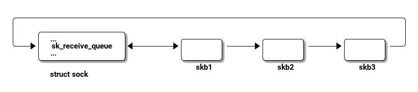
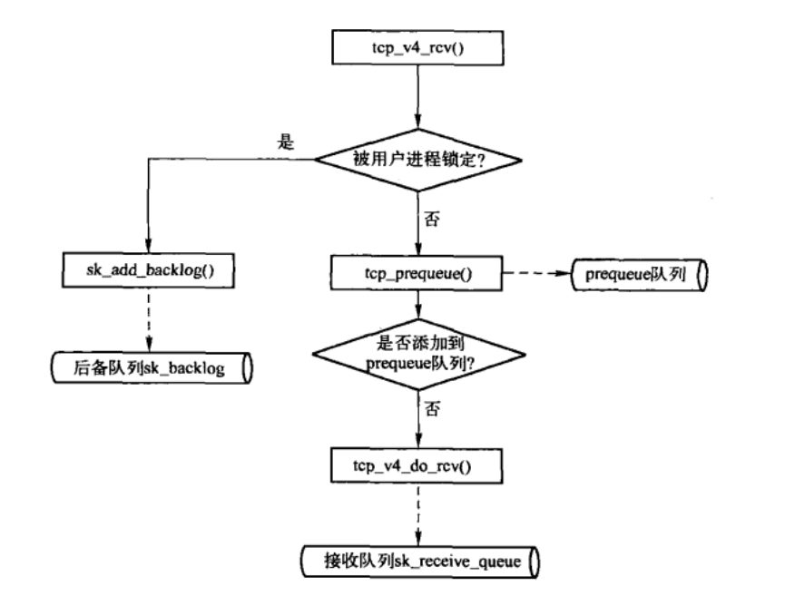
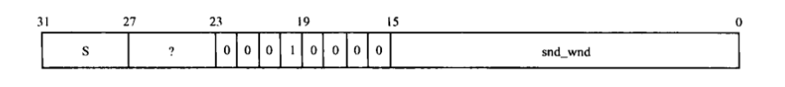
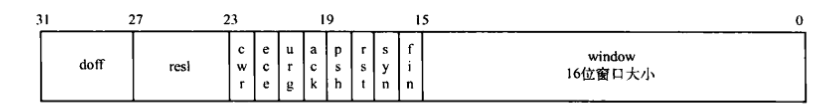
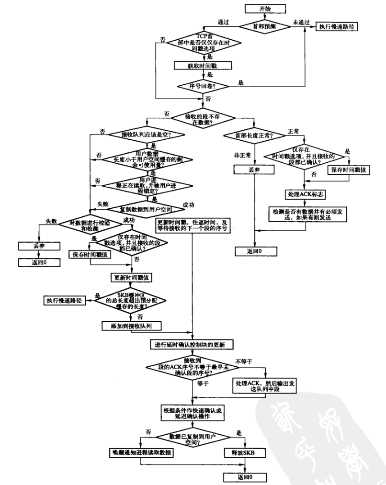
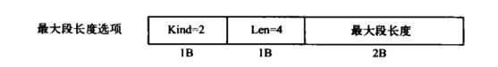
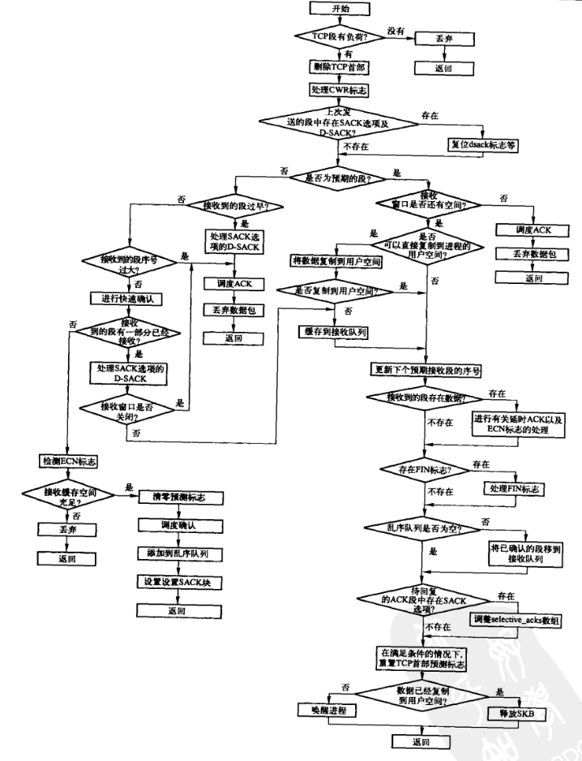
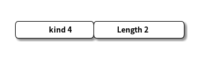
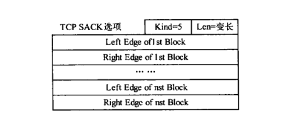
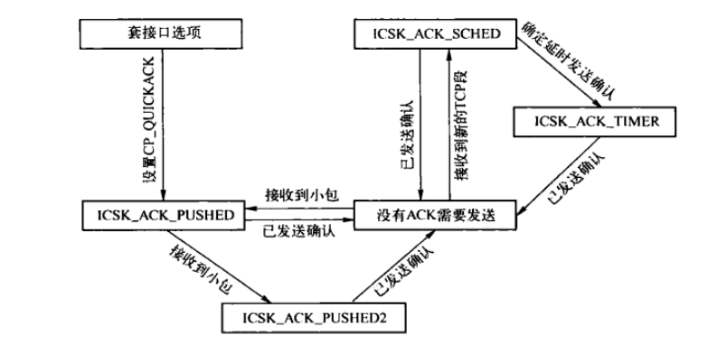

TCP的输入
Table of Contents
1 引言
TCP发送方将段发送出去后，会进行跟踪，直到得到接收方的确认为止。因此，当接收方受到一个段后，会根据情况将其添加到接收队列或prequeue队列，或者后备队列。
TCP传输控制块有三个有关接收的队列，即接收队列、prequeue队列和后备队列。启用tcp_low_latency时，TCP传输控制块在软中段中接收并处理TCP段，然后将其插入到接收队列中，等待用户进程从接收队列中获取TCP段后复制到用户空间中，最终删除并释放。
不启用tcp_low_latency能够提高TCP/IP协议栈的吞吐量及反应速度，TCP传输控制块在软中段中将TCP段添加到prequeue队列中，然后立即处理prequeue队列中的段，如果用户进程正在读取数据，则可以直接复制数据到用户空间的缓冲区中，否则添加到接收队列中，然后从软中断中返回。在多数情况下有机会处理prequeue队列中的段，但只有用户进程在进行recv类系统调用返回前，才在软中断中复制数据到用户空间的缓存中。
在用户进程因操作传输控制块而将其锁定时，无论是否启用tcp_low_latency,都会将未处理的TCP段添加到后备队列中，一旦用户进程解锁传输控制块，就会立即处理后备队列，将TCP段处理之后添加到接收队列中。
sock结构中的sk_receive_queue成员就是TCP的接收队列。通常情况下，接收的tcp段都会缓存在这里，等待用户进程主动读取。

TCP传输控制块中的sk_receive_queue是个双向链表的表头，该链表用来存储已接收待复制数据到用户空间的SKB。在TCP传输控制块中ucopy成员是用来描述用户空间的。在未启用tcp_low_latency时，如果数据可以从内核空间直接复制到用户空间，则需要从该字段获取有关用户空间的信息。
当接收方将数据从内核空间复制到用户空间后，需要更新接收窗口，删除并释放已经读取的段，以便有空间接收新数据到缓存中。

Figure 2: TCP接收过程调用及队列关系
2 TCP接收的总入口
当IP层接收到报文，或由多个分片组装成一个完整的IP数据报后，会调用该报文对应的传输层接收函数，传递给传输层处理。
tcp_v4_rcv()是TCP接收数据的总入口。首先对TCP段进行简单的校验，如TCP首部长度、校验和等，此时还不清楚该TCP段的宿主，即还不清楚将该段传递给哪个TCP传输控制块。然后根据源地址、端口、目的地址、端口查找所属的传输控制块。最后调用tcp_v4_do_rcv()将该TCP段接收到所属的传输控制块的接收队列中。
int tcp_v4_rcv(struct sk_buff *skb) { struct tcphdr *th; struct sock *sk; int ret; //如果不是到本地的数据报，直接丢弃 if (skb->pkt_type != PACKET_HOST) goto discard_it; /* Count it even if it's bad */ TCP_INC_STATS_BH(TCP_MIB_INSEGS); /** 如果TCP段在传输过程中发生分片，则到达本地后会在IP层重新组装。 组装完成后，报文分片都存储在分片链表中。在此需把存储在分片中的报文复制到SKB的线性存储区域。 如果发生异常，则丢弃该报文。*/ if (!pskb_may_pull(skb, sizeof(struct tcphdr))) goto discard_it; th = skb->h.th; //如果首部长度小于不带选项的TCP首部长度，则数据异常，丢弃 if (th->doff < sizeof(struct tcphdr) / 4) goto bad_packet; //检查整个TCP段长度和TCP首部长度 if (!pskb_may_pull(skb, th->doff * 4)) goto discard_it; /* An explanation is required here, I think. * Packet length and doff are validated by header prediction, * provided case of th->doff==0 is eliminated. * So, we defer the checks. */ //校验和 if ((skb->ip_summed != CHECKSUM_UNNECESSARY && tcp_v4_checksum_init(skb))) goto bad_packet; //根据TCP首部的信息来设置TCP控制块的值。 th = skb->h.th; TCP_SKB_CB(skb)->seq = ntohl(th->seq); TCP_SKB_CB(skb)->end_seq = (TCP_SKB_CB(skb)->seq + th->syn + th->fin + skb->len - th->doff * 4); TCP_SKB_CB(skb)->ack_seq = ntohl(th->ack_seq); TCP_SKB_CB(skb)->when = 0; TCP_SKB_CB(skb)->flags = skb->nh.iph->tos; TCP_SKB_CB(skb)->sacked = 0; //根据地址端口，从ehash（已经建立连接）或者bhash（监听状态）散列表查找 sk = __inet_lookup(&tcp_hashinfo, skb->nh.iph->saddr, th->source, skb->nh.iph->daddr, th->dest, inet_iif(skb)); if (!sk) goto no_tcp_socket; process: //传输控制块处于TCP_TIME_WAIT状态 if (sk->sk_state == TCP_TIME_WAIT) goto do_time_wait; //查找IPSec策略数据库 if (!xfrm4_policy_check(sk, XFRM_POLICY_IN, skb)) goto discard_and_relse; nf_reset(skb); //初始化SKB中和netfilter相关的成员。 //如果该传输控制块安装了过滤器，则进行过滤，符合条件的才能放行 if (sk_filter(sk, skb)) goto discard_and_relse; skb->dev = NULL;//此时已经不需要dev //接收TCP段前需要加锁，以同步对传输控制块接收队列的访问。 bh_lock_sock_nested(sk); ret = 0; if (!sock_owned_by_user(sk)) { /* 此时没有进程访问传输控制块， 则可以调用 tcp_v4_do_rcv()进行正常接收 */ #ifdef CONFIG_NET_DMA struct tcp_sock *tp = tcp_sk(sk); if (!tp->ucopy.dma_chan && tp->ucopy.pinned_list) tp->ucopy.dma_chan = get_softnet_dma(); if (tp->ucopy.dma_chan) ret = tcp_v4_do_rcv(sk, skb); else #endif { if (!tcp_prequeue(sk, skb)) ret = tcp_v4_do_rcv(sk, skb); } } else //否则添加到后备队列 sk_backlog 中 sk_add_backlog(sk, skb); bh_unlock_sock(sk); sock_put(sk); return ret; no_tcp_socket: //处理没有创建传输控制块接收到报文的情况，通常响应RST段。 if (!xfrm4_policy_check(NULL, XFRM_POLICY_IN, skb)) goto discard_it; if (skb->len < (th->doff << 2) || tcp_checksum_complete(skb)) { bad_packet: TCP_INC_STATS_BH(TCP_MIB_INERRS); } else { tcp_v4_send_reset(NULL, skb); } discard_it: /* Discard frame. */ kfree_skb(skb); return 0; discard_and_relse: sock_put(sk); goto discard_it; do_time_wait: if (!xfrm4_policy_check(NULL, XFRM_POLICY_IN, skb)) { inet_twsk_put(inet_twsk(sk)); goto discard_it; } if (skb->len < (th->doff << 2) || tcp_checksum_complete(skb)) { TCP_INC_STATS_BH(TCP_MIB_INERRS); inet_twsk_put(inet_twsk(sk)); goto discard_it; } switch (tcp_timewait_state_process(inet_twsk(sk), skb, th)) { case TCP_TW_SYN: { struct sock *sk2 = inet_lookup_listener(&tcp_hashinfo, skb->nh.iph->daddr, th->dest, inet_iif(skb)); if (sk2) { inet_twsk_deschedule(inet_twsk(sk), &tcp_death_row); inet_twsk_put(inet_twsk(sk)); sk = sk2; goto process; } /* Fall through to ACK */ } case TCP_TW_ACK: tcp_v4_timewait_ack(sk, skb); break; case TCP_TW_RST: goto no_tcp_socket; case TCP_TW_SUCCESS:; } goto discard_it; }
2.1 接收到prequeue队列
在未启用tcp_low_latency时，如果用户进程正在读取数据，则将接收到的TCP段直接加入到prequeue队列中，只有当prequeue队列消耗的内存大于接收缓冲区时，才会立即处理prequeue队列中的段，才能在软中断中复制数据到用户空间中。
/* Packet is added to VJ-style prequeue for processing in process * context, if a reader task is waiting. Apparently, this exciting * idea (VJ's mail "Re: query about TCP header on tcp-ip" of 07 Sep 93) * failed somewhere. Latency? Burstiness? Well, at least now we will * see, why it failed. 8)8) --ANK * * NOTE: is this not too big to inline? */ static inline int tcp_prequeue(struct sock *sk, struct sk_buff *skb) { struct tcp_sock *tp = tcp_sk(sk); //必须在未启用tcp_low_latency,且用户进程正在读取数据的情况下，才能添加到prequeue队列。 if (!sysctl_tcp_low_latency && tp->ucopy.task) { //添加到prequeue队列。 __skb_queue_tail(&tp->ucopy.prequeue, skb); tp->ucopy.memory += skb->truesize;//更新prequeue队列消耗的内存 if (tp->ucopy.memory > sk->sk_rcvbuf) { /*prequeue队列消耗的内存超过接收缓存上限， 则立刻处理prequeue队列上的段 */ struct sk_buff *skb1; BUG_ON(sock_owned_by_user(sk)); while ((skb1 = __skb_dequeue(&tp->ucopy.prequeue)) != NULL) { sk->sk_backlog_rcv(sk, skb1); NET_INC_STATS_BH(LINUX_MIB_TCPPREQUEUEDROPPED); } tp->ucopy.memory = 0; } else if (skb_queue_len(&tp->ucopy.prequeue) == 1) { /* 没超过接收缓存上限，且prequeue队列中只存在 一个SKB */ wake_up_interruptible(sk->sk_sleep); if (!inet_csk_ack_scheduled(sk)) //如果无需发送ACK，则复位重新启动延时确认定时器。 inet_csk_reset_xmit_timer(sk, ICSK_TIME_DACK, (3 * TCP_RTO_MIN) / 4, TCP_RTO_MAX); } return 1; //表示已经添加到prequeue队列或者已经被处理 } return 0; //表示未被处理，需要继续接收处理 }
2.2 有效TCP段的处理
TCP传输层接收到段之后，经过简单校验，并查找到该段所属的传输控制块后，除非处于FIN_WAIT_2或TIME_WAIT状态，否则都会调用tcp_v4_do_rcv()作具体的处理。
/* The socket must have it's spinlock held when we get * here. * * We have a potential double-lock case here, so even when * doing backlog processing we use the BH locking scheme. * This is because we cannot sleep with the original spinlock * held. */ int tcp_v4_do_rcv(struct sock *sk, struct sk_buff *skb) { struct sock *rsk; #ifdef CONFIG_TCP_MD5SIG /* * We really want to reject the packet as early as possible * if: * o We're expecting an MD5'd packet and this is no MD5 tcp option * o There is an MD5 option and we're not expecting one */ if (tcp_v4_inbound_md5_hash(sk, skb)) goto discard; #endif //状态为TCP_ESTABLISHED,则调用tcp_rcv_established()接收处理。 if (sk->sk_state == TCP_ESTABLISHED) { /* Fast path */ TCP_CHECK_TIMER(sk); if (tcp_rcv_established(sk, skb, skb->h.th, skb->len)) { rsk = sk; goto reset; } TCP_CHECK_TIMER(sk); return 0; } //校验报文的长度和校验码，如果失败则跳转到csum_err处统计后丢弃 if (skb->len < (skb->h.th->doff << 2) || tcp_checksum_complete(skb)) goto csum_err; //被动打开，则是处理三次握手的最后一次握手的ACK段，建立连接 if (sk->sk_state == TCP_LISTEN) { struct sock *nsk = tcp_v4_hnd_req(sk, skb); if (!nsk) goto discard; if (nsk != sk) { if (tcp_child_process(sk, nsk, skb)) { rsk = nsk; goto reset; } return 0; } } TCP_CHECK_TIMER(sk); //处理除了ESTABLISHED 和 TIME_WAIT状态的传输控制块，如果处理出错，则发送RST段 if (tcp_rcv_state_process(sk, skb, skb->h.th, skb->len)) { rsk = sk; goto reset; } TCP_CHECK_TIMER(sk); return 0; reset: tcp_v4_send_reset(rsk, skb); //发送reset discard: kfree_skb(skb); /* Be careful here. If this function gets more complicated and * gcc suffers from register pressure on the x86, sk (in %ebx) * might be destroyed here. This current version compiles correctly, * but you have been warned. */ return 0; csum_err: TCP_INC_STATS_BH(TCP_MIB_INERRS); goto discard; }
3 报文的过滤
现在无论是PF_PACKET类型的套接口还是PF_INET类型的套接口，Linux都支持内核过滤。内核允许把过滤器直接挂接到PF_PACKET或者PF_INET类型的套接口处理例程中。当确定了接收到的包所属的传输层套接口后，调用过滤函数，TCP和UDP中过滤函数为sk_filter()。
3.1 过滤器的数据结构
设置BPF过滤器是通过setsockopt调用来完成的，格式如下：
setsockopt(s, SOL_SOCKET, SO_ATTACH_FILTER, &Filter, sizeof(Filter));
3.1.1 sock_fprog结构
setsockopt函数的第四个参数Filter为sock_fprog结构类型。
struct sock_fprog /* Required for SO_ATTACH_FILTER. */ { unsigned short len; //filter指向的sock_filter结构数组的长度 struct sock_filter __user *filter; //指向的sock_filter结构数组 };
3.1.2 sock_filter结构
sock_filter结构为BPF过滤代码，结构定义如下：
/* * Try and keep these values and structures similar to BSD, especially * the BPF code definitions which need to match so you can share filters */ struct sock_filter /* Filter block */ { __u16 code; /* 指令编码， 动作包括 比较 偏移 返回 */ __u8 jt; /* 比较操作成功后，跳转到指令数据jt处，做下一步过滤操作 */ __u8 jf; /* 比较操作失败后，跳转到指令数组jf处，做下一步过滤炒作 */ __u32 k; /** 当动作code为偏移时，k是当前读取数据包的偏移量，单位是 字节 或 字 或 双字 当动作code为比较时，k是与指针指向的数据包当前位置比较的值*/ };
以下是一个示例：
$ tcpdump -d host 192.168.1.2 Warning: assuming Ethernet (000) ldh [12] (001) jeq #0x800 jt 2 jf 6 (002) ld [26] (003) jeq #0xc0a80102 jt 12 jf 4 (004) ld [30] (005) jeq #0xc0a80102 jt 12 jf 13 (006) jeq #0x806 jt 8 jf 7 (007) jeq #0x8035 jt 8 jf 13 (008) ld [28] (009) jeq #0xc0a80102 jt 12 jf 10 (010) ld [38] (011) jeq #0xc0a80102 jt 12 jf 13 (012) ret #262144 (013) ret #0
- 0-1 确定过滤的是不是IP报
- 2-5 确定过滤的IP包源地址或目的地址是不是191.168.1.2
- 6-7 确定过滤的包是ARP还是RARP包
- 8-11 确定过滤的ARP/RARP包源地址或目的地址是不是192.168.1.2
- 12 如果比较成功，则跳转到此，将数据包中前96个字节传递给用户进程
- 13 如果比较失败，则丢弃
注意： 不同的协议，地址值在帧中的偏移值是不同的，所以在以上比较指令之前的一个指令通常是调整当前的偏移。
要把以上的过滤规则安装到系统中，实际上也不必手动编写sock_filter结构数组中的过滤编码，使用 tcpdump -dd host 192.168.1.2命令便可以实现 ，然后复制到代码中即可，如下所示：
$ tcpdump -dd host 192.168.1.2
Warning: assuming Ethernet
{ 0x28, 0, 0, 0x0000000c },
{ 0x15, 0, 4, 0x00000800 },
{ 0x20, 0, 0, 0x0000001a },
{ 0x15, 8, 0, 0xc0a80102 },
{ 0x20, 0, 0, 0x0000001e },
{ 0x15, 6, 7, 0xc0a80102 },
{ 0x15, 1, 0, 0x00000806 },
{ 0x15, 0, 5, 0x00008035 },
{ 0x20, 0, 0, 0x0000001c },
{ 0x15, 2, 0, 0xc0a80102 },
{ 0x20, 0, 0, 0x00000026 },
{ 0x15, 0, 1, 0xc0a80102 },
{ 0x6, 0, 0, 0x00040000 },
{ 0x6, 0, 0, 0x00000000 },
3.1.3 sk_filter结构
sk_filter结构可以说是与sock_fprog结构相对应的。安装过滤器时，过滤规则会从用户空间的sk_filter结构中复制到内核空间的sk_filter结构中。只是sk_filter结构只能在内核中使用，并且除了存储过滤规则之外，还多了一些其他的成员，定义如下：
struct sk_filter { atomic_t refcnt; //引用计数，可能存在多个传输控制块共享一个过滤规则 unsigned int len; //过滤规则sock_filter结构数组的长度 struct rcu_head rcu; //卸载过滤器时，用该成员作为链表节点加入到rcu_bh_data链表中，之后在适当的时候才真正的释放。 struct sock_filter insns[0]; //存储过滤规则的数组地址。 };
3.2 安装过滤器
安装过滤器是通过setsockopt系统调用进行，主要从用户空间复制过滤规则到内核空间，然后安装到对应的传输控制块上。
int sock_setsockopt(struct socket *sock, int level, int optname, char __user *optval, int optlen) { struct sock *sk=sock->sk; struct sk_filter *filter; //...... switch(optname) { //...... case SO_ATTACH_FILTER: ret = -EINVAL; if (optlen == sizeof(struct sock_fprog)) { //校验参数的有效性 struct sock_fprog fprog; ret = -EFAULT; //将sock_fprog结构复制到内核空间 if (copy_from_user(&fprog, optval, sizeof(fprog))) break; //通过sk_attach_filter安装过滤器 ret = sk_attach_filter(&fprog, sk); } break; //...... }
sk_attach_filter()为套接口安装过滤器，参数fprog为待安装的过滤器，sk为安装的目标传输控制块。返回0表示成功。
/** * sk_attach_filter - attach a socket filter * @fprog: the filter program * @sk: the socket to use * * Attach the user's filter code. We first run some sanity checks on * it to make sure it does not explode on us later. If an error * occurs or there is insufficient memory for the filter a negative * errno code is returned. On success the return is zero. */ int sk_attach_filter(struct sock_fprog *fprog, struct sock *sk) { struct sk_filter *fp; unsigned int fsize = sizeof(struct sock_filter) * fprog->len; int err; /* 确保有新的过滤器并且数量正确 */ if (fprog->filter == NULL) return -EINVAL; //为传输控制块分配用于保存待安装的过滤器的缓存 fp = sock_kmalloc(sk, fsize+sizeof(*fp), GFP_KERNEL); if (!fp) return -ENOMEM; //将过滤器从用户空间复制到新分配的缓存中 if (copy_from_user(fp->insns, fprog->filter, fsize)) { sock_kfree_s(sk, fp, fsize+sizeof(*fp)); return -EFAULT; } //增加引用 atomic_set(&fp->refcnt, 1); fp->len = fprog->len; //设置过滤器长度 /** 调用sk_chk_filter()对过滤器进行合法性检查，主要是检查操作代码是否在定义的范围内， 也就是检查代码中是否存在未知的指令。如果检查正常，就可以安装到传输控制块的sk_filter上。 如果原先存在过滤器，则取出并释放*/ err = sk_chk_filter(fp->insns, fp->len); if (!err) { struct sk_filter *old_fp; rcu_read_lock_bh(); old_fp = rcu_dereference(sk->sk_filter); rcu_assign_pointer(sk->sk_filter, fp); rcu_read_unlock_bh(); fp = old_fp; } if (fp) sk_filter_release(sk, fp); return err; }
3.3 卸载过滤器
卸载过滤器也是通过setsockopt系统调用。
setsockopt(s, SOL_SOCKET, SO_DETACH_FILTER, &dummy, sizeof(dummy));
卸载过滤器的setsockopt系统调用参数比较简单，只需关注前三个，后两个是为了符合系统调用参数格式。setsockopt系统调用的实现中会对optlen做检测，不能小雨一个整形字长，因此不能使用NULL,而形如int dummy就可以。
卸载过滤器也比较简单，从传输控制块上移出过滤器并释放。
int sock_setsockopt(struct socket *sock, int level, int optname, char __user *optval, int optlen) { struct sock *sk=sock->sk; struct sk_filter *filter; //...... case SO_DETACH_FILTER: rcu_read_lock_bh(); filter = rcu_dereference(sk->sk_filter); if (filter) { rcu_assign_pointer(sk->sk_filter, NULL); //此处不会真正释放过滤器资源，而是将带释放的过滤器挂载到系统的rcu_bh_data中，在适当的时刻通过回调释放 sk_filter_release(sk, filter); rcu_read_unlock_bh(); break; } rcu_read_unlock_bh(); ret = -ENONET; break; //...... } /** * sk_filter_release: Release a socket filter * @sk: socket * @fp: filter to remove * * Remove a filter from a socket and release its resources. */ static inline void sk_filter_release(struct sock *sk, struct sk_filter *fp) { unsigned int size = sk_filter_len(fp); //获取过滤器的大小 //调整传输控制块的sk_omem_alloc atomic_sub(size, &sk->sk_omem_alloc); //递减过滤器的引用计数，如果递减后不为0，则还有引用，则将其挂载到rcu_bh_data,之后通过sk_filter_rcv_free释放 if (atomic_dec_and_test(&fp->refcnt)) call_rcu_bh(&fp->rcu, sk_filter_rcu_free); }
3.4 过滤执行
sk_filter()封装了套接口层的过滤器sk_run_filter()。
/** * sk_filter - run a packet through a socket filter * @sk: sock associated with &sk_buff * @skb: buffer to filter * @needlock: set to 1 if the sock is not locked by caller. * * Run the filter code and then cut skb->data to correct size returned by * sk_run_filter. If pkt_len is 0 we toss packet. If skb->len is smaller * than pkt_len we keep whole skb->data. This is the socket level * wrapper to sk_run_filter. It returns 0 if the packet should * be accepted or -EPERM if the packet should be tossed. * */ static inline int sk_filter(struct sock *sk, struct sk_buff *skb) { int err; struct sk_filter *filter; err = security_sock_rcv_skb(sk, skb); if (err) return err; rcu_read_lock_bh(); filter = sk->sk_filter; if (filter) {/** 如果安装了过滤器，则调用sk_run_filter过滤。 该函数的实现类似汇编程序的解释器，进行数据的比较动作。返回值为0表示待过滤的数据包不符合过滤规则，需丢弃。 非0表明数据包中前pkt_len个字节可以继续往下处理，传递给用户进程*/ unsigned int pkt_len = sk_run_filter(skb, filter->insns, filter->len); err = pkt_len ? pskb_trim(skb, pkt_len) : -EPERM; //通过返回值判断是丢弃还是放行 } rcu_read_unlock_bh(); return err; }
4 ESTABLISHED状态的接收
tcp_rcv_established()是ESTABLISHED状态下的输入处理函数，为了高效的处理接收到的段，对TCP段处理提供了两种路径。
- 快速路径：用于处理预期、理想情形下的输入段。正常情况下，TCP连接最常见的情形应该被尽可能的检测并最优化处理，而无需检测一些边缘的情形。
- 慢速路径：用于所有和预期、理想不对应的且需要进一步处理的段。例如接收段存在除时间戳选项之外选项的段。
通过研究表明，在局域网内通过TCP连接输入的所有数据包中95%以上都执行了快速路径，而在广域网上达到了80%，因此两种路径的区分很有必要。
4.1 首部预测
TCP发送是按照序号发送，在网络通信通常的情况下，接收方也是按着发送的顺序接收TCP段。因此首部预测算法通过处理两种常见现象，简化单向数据传输的实现：
- 如果TCP发送数据，连接上等待接收的下一个段是已发送数据的ACK。
- 如果TCP接收数据，连接上等待接收的下一个段是顺序到达的数据段。
在以上两种情况下，可以判断收到的段是不是等待接收的段，这也是首部预测的必要条件。如果是，则立即处理，这会比执行慢速路径要快的多。
4.1.1 设置预测标志：tcp_fast_path_check()
设置首部预测标志需要满足以下条件：
- 缓存乱序队列为空，说明网络比较畅通。
- 接收窗口不为0，说明当前还能接收数据。
- 当前已使用的接收缓存没有达到上限，也说明目前还能接收数据。
- 没有接收到紧急指针，快速路径不处理带外数据。
static inline void tcp_fast_path_check(struct sock *sk, struct tcp_sock *tp) { if (skb_queue_empty(&tp->out_of_order_queue) && tp->rcv_wnd && atomic_read(&sk->sk_rmem_alloc) < sk->sk_rcvbuf && !tp->urg_data) tcp_fast_path_on(tp); } static inline void __tcp_fast_path_on(struct tcp_sock *tp, u32 snd_wnd) { //由于首部预测标志需要直接与TCP首部的字段值比较，所以使用网络字节序 /** 将TCP首部长度tcp_header_len左移26位。 等同于首先将tcp_header_len左移两位，得到的长度值设置到TCP首部对应的32位字的27-31位（左移28），优化后就是左移26位。 然后设置ACK标志，以及对方的接收窗口大小。参见TCP首部图*/ tp->pred_flags = htonl((tp->tcp_header_len << 26) | ntohl(TCP_FLAG_ACK) | snd_wnd); } //对__tcp_fast_path_on函数的封装，提供发送窗口大小，由snd_wnd和窗口扩大因子计算得到 static inline void tcp_fast_path_on(struct tcp_sock *tp) { __tcp_fast_path_on(tp, tp->snd_wnd >> tp->rx_opt.snd_wscale); }
4.1.2 预测标志
预测标志存储在tcp_sock结构的pred_flags成员中，是首部预测的条件之一，属于必要条件，如果与预测标志不符，则只能执行慢速路径。预测标志是32位无符号整数，如下图：

Figure 3: 预测标志格式
预测标志主要用来检测TCP首部的第四个32位字，两者是一一对应的：

Figure 4: TCP首部的第4个32位字
/* * TCP receive function for the ESTABLISHED state. * * It is split into a fast path and a slow path. The fast path is * disabled when: * - A zero window was announced from us - zero window probing * is only handled properly in the slow path. * - Out of order segments arrived. * - Urgent data is expected. * - There is no buffer space left * - Unexpected TCP flags/window values/header lengths are received * (detected by checking the TCP header against pred_flags) * - Data is sent in both directions. Fast path only supports pure senders * or pure receivers (this means either the sequence number or the ack * value must stay constant) * - Unexpected TCP option. * * When these conditions are not satisfied it drops into a standard * receive procedure patterned after RFC793 to handle all cases. * The first three cases are guaranteed by proper pred_flags setting, * the rest is checked inline. Fast processing is turned on in * tcp_data_queue when everything is OK. */ int tcp_rcv_established(struct sock *sk, struct sk_buff *skb, struct tcphdr *th, unsigned len) { struct tcp_sock *tp = tcp_sk(sk); /* * Header prediction. * The code loosely follows the one in the famous * "30 instruction TCP receive" Van Jacobson mail. * * Van's trick is to deposit buffers into socket queue * on a device interrupt, to call tcp_recv function * on the receive process context and checksum and copy * the buffer to user space. smart... * * Our current scheme is not silly either but we take the * extra cost of the net_bh soft interrupt processing... * We do checksum and copy also but from device to kernel. */ tp->rx_opt.saw_tstamp = 0; /* pred_flags is 0xS?10 << 16 + snd_wnd * if header_prediction is to be made * 'S' will always be tp->tcp_header_len >> 2 * '?' will be 0 for the fast path, otherwise pred_flags is 0 to * turn it off (when there are holes in the receive * space for instance) * PSH flag is ignored. */ /** tcp_flag_word(th) 首先获取TCP首部中的第4个32位字，然后和TCP_HP_BITS做与操作， 屏蔽保留位和PSH,最后和预测标志作比较，如果通过则进行首部预测的其他比较， 否则执行慢速路径。 在众多标志位中，32位的确认序号字段和ACK标志总是TCP首部的一部分， 因此发送ACK无需任何代价，一旦一个连接建立起来，ACK标志总是被设置为1。 而PSH标志位是用来通知对方尽快接收的，因此在预测标志中会忽略PSH。 当预测标志为0时，表示关闭了首部预测，必须执行慢速路径*/ if ((tcp_flag_word(th) & TCP_HP_BITS) == tp->pred_flags && TCP_SKB_CB(skb)->seq == tp->rcv_nxt) {/** 本次接收到TCP段的序号 与 等待接收的下一个段的序号比较。 相等则继续首部预测的其他比较，否则走慢速路径*/
4.1.3 时间戳选项与PAWS检测
通过首部预测后，如果带有时间戳，还需要对时间戳检测。
int tcp_header_len = tp->tcp_header_len; /* Timestamp header prediction: tcp_header_len * is automatically equal to th->doff*4 due to pred_flags * match. */ //通过TCP首部长度来检测TCP首部中是否只存在时间戳选项 /* Check timestamp */ if (tcp_header_len == sizeof(struct tcphdr) + TCPOLEN_TSTAMP_ALIGNED) { __be32 *ptr = (__be32 *)(th + 1); /* No? Slow path! */ //只通过时间判断时间戳选项不严谨，再次检测时间戳 if (*ptr != htonl((TCPOPT_NOP << 24) | (TCPOPT_NOP << 16) | (TCPOPT_TIMESTAMP << 8) | TCPOLEN_TIMESTAMP)) goto slow_path; /** 获取时间戳，然后将获取到的时间戳值和下一个发送的TCP段的时间戳回显值相比， 做PAWS检测，如果前者比后者小，则时间戳值过早，发生序号回卷，走慢速路径*/ tp->rx_opt.saw_tstamp = 1; ++ptr; tp->rx_opt.rcv_tsval = ntohl(*ptr); ++ptr; tp->rx_opt.rcv_tsecr = ntohl(*ptr); /* If PAWS failed, check it more carefully in slow path */ if ((s32)(tp->rx_opt.rcv_tsval - tp->rx_opt.ts_recent) < 0) goto slow_path; /* DO NOT update ts_recent here, if checksum fails * and timestamp was corrupted part, it will result * in a hung connection since we will drop all * future packets due to the PAWS test. */ }
4.2 接收处理无负荷的ACK段
TCP在ESTASBLISHED状态下传输的数据，一般都是有负荷的段，因为ACK无需任何代价，因此已接收的段的ACK,一般都是在带有负荷的段中携带。如果没有数据发送，也只能发送一个无负荷的ACK段。因此接收TCP段时，需要判断是否有负荷。
if (len <= tcp_header_len) { /* Bulk data transfer: sender */ if (len == tcp_header_len) { /* Predicted packet is in window by definition. * seq == rcv_nxt and rcv_wup <= rcv_nxt. * Hence, check seq<=rcv_wup reduces to: */ /** 如果TCP首部中有时间戳且接收的段都已经确认，则保存时间戳， 用于发送下一个段的时间戳回显*/ if (tcp_header_len == (sizeof(struct tcphdr) + TCPOLEN_TSTAMP_ALIGNED) && tp->rcv_nxt == tp->rcv_wup) tcp_store_ts_recent(tp); /* We know that such packets are checksummed * on entry. */ //处理ACK tcp_ack(sk, skb, 0); __kfree_skb(skb); tcp_data_snd_check(sk, tp);//检测是否需要发送数据 return 0; } else { /* Header too small */ TCP_INC_STATS_BH(TCP_MIB_INERRS); goto discard; }
4.3 执行快速路径
通过首部预测后，说明收到的是预期的段，开始处理负荷部分数据。TCP接收数据的目的是把数据复制给用户进程，因此如果可以会尽量的吧数据复制到用户空间。实在不行，再将数据缓存，等待用户进程读取。

Figure 5: 执行快速路径
} else { int eaten = 0; int copied_early = 0; /** 判断是否可以复制到用户空间： 1. 正在接收的段的序号是否与尚未从内核空间复制到用户空间的段最前面的序号相等，即接收队列为空。 2. TCP段中的用户数据长度小于用户空间缓存的剩余可使用量。 满足以上两个条件，则只能说明满足了复制到用户空间的必要条件。 */ if (tp->copied_seq == tp->rcv_nxt && len - tcp_header_len <= tp->ucopy.len) { #ifdef CONFIG_NET_DMA if (tcp_dma_try_early_copy(sk, skb, tcp_header_len)) { copied_early = 1; eaten = 1; } #endif /** 只有当用户进程正在调用recv类系统调用从内核读取数据时（用户进程睡眠）， 且传输层被用户进程锁定，启用I/O加速以网络DMA方式复制数据失败时，才可以直接 将数据复制到用户空间*/ if (tp->ucopy.task == current && sock_owned_by_user(sk) && !copied_early) { __set_current_state(TASK_RUNNING); if (!tcp_copy_to_iovec(sk, skb, tcp_header_len)) eaten = 1; } //如果复制数据到用户空间成功，则更新时间戳、往返时间以及等待接收的下一个TCP段的序号。 if (eaten) { /* Predicted packet is in window by definition. * seq == rcv_nxt and rcv_wup <= rcv_nxt. * Hence, check seq<=rcv_wup reduces to: */ if (tcp_header_len == (sizeof(struct tcphdr) + TCPOLEN_TSTAMP_ALIGNED) && tp->rcv_nxt == tp->rcv_wup) tcp_store_ts_recent(tp); tcp_rcv_rtt_measure_ts(sk, skb); __skb_pull(skb, tcp_header_len); tp->rcv_nxt = TCP_SKB_CB(skb)->end_seq; NET_INC_STATS_BH(LINUX_MIB_TCPHPHITSTOUSER); } /** 老版本的tcp_clenaup_rbuf()主要用来清理接收缓存，现在的功能与函数名称已经不符了。 如果有必要立即发送ACK段，则发送ACK,在此，如果通过I/O加速直接将数据复制到用户空间， 则需要确定是否发送ACK段*/ if (copied_early) tcp_cleanup_rbuf(sk, skb->len); } /** 如果没有将数据直接复制到用户空间，或者复制失败，则对数据进行校验和检测*/ if (!eaten) { if (tcp_checksum_complete_user(sk, skb)) goto csum_error; /* Predicted packet is in window by definition. * seq == rcv_nxt and rcv_wup <= rcv_nxt. * Hence, check seq<=rcv_wup reduces to: */ //接收的段都已经确认，则更新时间戳 if (tcp_header_len == (sizeof(struct tcphdr) + TCPOLEN_TSTAMP_ALIGNED) && tp->rcv_nxt == tp->rcv_wup) tcp_store_ts_recent(tp); tcp_rcv_rtt_measure_ts(sk, skb); //如果整个SKB缓冲区总长度超过预分配缓存长度，则执行慢速路径 if ((int)skb->truesize > sk->sk_forward_alloc) goto step5; NET_INC_STATS_BH(LINUX_MIB_TCPHPHITS); /** 删除SKB中的TCP首部，然后将数据报添加到接收队列中缓存起来，等待进程主动读取。 设置该SKB的宿主、释放回调函数，更新传输控制块的已使用接收缓存总量及预分配缓存长度， 此时该套接口已属于当前传输控制块了。*/ /* Bulk data transfer: receiver */ __skb_pull(skb,tcp_header_len); __skb_queue_tail(&sk->sk_receive_queue, skb); sk_stream_set_owner_r(skb, sk); //获取下一个预期的TCP段序号 tp->rcv_nxt = TCP_SKB_CB(skb)->end_seq; } /** 更新延时确认控制块，同时根据条件进行快速确认或延时确认*/ //延时确认控制块的更新 tcp_event_data_recv(sk, tp, skb); //接收到段的ACK序号不等于最早未确认段的序号，则调用tcp_ack处理，然后输出发送队列的段 if (TCP_SKB_CB(skb)->ack_seq != tp->snd_una) { /* Well, only one small jumplet in fast path... */ tcp_ack(sk, skb, FLAG_DATA); tcp_data_snd_check(sk, tp); if (!inet_csk_ack_scheduled(sk)) goto no_ack; } //根据条件作快速确认或延时确认操作 __tcp_ack_snd_check(sk, 0); no_ack: #ifdef CONFIG_NET_DMA if (copied_early) __skb_queue_tail(&sk->sk_async_wait_queue, skb); else #endif /* 如果已经复制到用户空间，则释放该SKB。 否则说明数据已经就绪，唤醒当前套接口的进程等待队列fasync_list上的进程，通知其读取数据*/ if (eaten) __kfree_skb(skb); else sk->sk_data_ready(sk, 0); return 0; } }
4.4 执行慢速路径
如果不满足快速路径条件俺，则数据报走慢速路径，需要全面的检验。

Figure 6: 执行慢速路径
slow_path: //检测长度和校验和 if (len < (th->doff<<2) || tcp_checksum_complete_user(sk, skb)) goto csum_error; /** 调用tcp_fast_parse_options()解析TCP选项，并检查时间戳选项。如果首部中存在时间戳选项，但PAWS检验失败， 并且不存在RST标志，则还需发送DACK给对端，说明接收到的TCP段已经确认过，然后丢弃该数据包。*/ /* * RFC1323: H1. Apply PAWS check first. */ if (tcp_fast_parse_options(skb, th, tp) && tp->rx_opt.saw_tstamp && tcp_paws_discard(sk, skb)) { if (!th->rst) { NET_INC_STATS_BH(LINUX_MIB_PAWSESTABREJECTED); tcp_send_dupack(sk, skb); goto discard; } /* Resets are accepted even if PAWS failed. ts_recent update must be made after we are sure that the packet is in window. */ } /* * Standard slow path. */ /** 调用tcp_sequence()检测接收到的段序号是否在接收窗口内，如果不是，则丢弃该数据包。如果不是复位段（TCP 首部中存在RST标志），则还需发送DACK给对端，说明接收到的TCP段不再接收窗口内。*/ if (!tcp_sequence(tp, TCP_SKB_CB(skb)->seq, TCP_SKB_CB(skb)->end_seq)) { /* RFC793, page 37: "In all states except SYN-SENT, all reset * (RST) segments are validated by checking their SEQ-fields." * And page 69: "If an incoming segment is not acceptable, * an acknowledgment should be sent in reply (unless the RST bit * is set, if so drop the segment and return)". */ if (!th->rst) tcp_send_dupack(sk, skb); goto discard; } //接收的段是复位段 if(th->rst) { tcp_reset(sk); goto discard; } //如果首部中存在时间戳选项且有效，则保存该时间戳 tcp_replace_ts_recent(tp, TCP_SKB_CB(skb)->seq); //已建立连接的TCP收到SYN段，则认为对端发送了错误信息，执行tcp_reset() if (th->syn && !before(TCP_SKB_CB(skb)->seq, tp->rcv_nxt)) { TCP_INC_STATS_BH(TCP_MIB_INERRS); NET_INC_STATS_BH(LINUX_MIB_TCPABORTONSYN); tcp_reset(sk); return 1; } step5: if(th->ack) //如果首部设置了ACK标记（通常都会设置），则调用tcp_ack()处理。 tcp_ack(sk, skb, FLAG_SLOWPATH); //采样、更新接收方的RTT。 tcp_rcv_rtt_measure_ts(sk, skb); //处理带外数据 /* Process urgent data. */ tcp_urg(sk, skb, th); /* TCP段的负荷部分由tcp_data_queue()处理，包括检查接收缓存区是否有足够的空间， 将SKB插入到接收队列或者乱序队列*/ /* step 7: process the segment text */ tcp_data_queue(sk, skb); /** 最后调用tcp_data_snd_check()检查是否有数据要发送， 调用tcp_ack_snd_check()检查是否有ACK需要发送（快速确认或者延迟确认）*/ tcp_data_snd_check(sk, tp); tcp_ack_snd_check(sk); return 0; csum_error: TCP_INC_STATS_BH(TCP_MIB_INERRS); discard: __kfree_skb(skb); return 0; }
4.5 数据从内核空间复制到用户空间
用户空间缓存由tcp_sock结构的ucopy成员描述，其类型也是由多个成员组成的结构，其中的iov是复制过程中最重要的成员，它指向描述用户进程提供的缓存区信息数组。
/* A word of warning: Our uio structure will clash with the C library one (which is now obsolete). Remove the C library one from sys/uio.h if you have a very old library set */ struct iovec { void __user *iov_base; /* 指向用户空间缓存区 */ __kernel_size_t iov_len; /* 用户空间缓存区长度 */ };
4.5.1 主动复制数据到用户空间
TCP接收到数据后，如果数据正常，就要把数据复制给用户进程。在多数情况下，用户进程调用recvmsg系统调用接收数据。除此之外，还有一种情况会将接收到的数据主动复制到用户空间：TCP正在接收的段的序号与尚未从内核空间复制到用户空空间的段的最前序号相等，TCP段中的用户数据长度小于用户空间缓存剩余的可使用量，且用户进程正在调用recv等系统调用从内核空间读取数据（用户进程正在睡眠），传输层被用户进程锁定，这种情况下直接将数据复制给用户空间。
tcp_copy_to_iovec()在接收到的数据主动复制到用户空间时调用。tcp_copy_to_iovec()只是对 skb_copy_datagram_iovec()和skb_copy_and_csum_datagram_iovec()做了封装。
static int tcp_copy_to_iovec(struct sock *sk, struct sk_buff *skb, int hlen/*TCP首部长度*/) { struct tcp_sock *tp = tcp_sk(sk); int chunk = skb->len - hlen; //待复制数据的长度 int err; local_bh_enable(); if (skb->ip_summed==CHECKSUM_UNNECESSARY) //根据是否指定了CHECKSUM_UNNECESSARY标志来决定是否执行校验和的检查 err = skb_copy_datagram_iovec(skb, hlen, tp->ucopy.iov, chunk); else err = skb_copy_and_csum_datagram_iovec(skb, hlen, tp->ucopy.iov); if (!err) { //复制成功，更新用户空间缓存区长度、已经复制到用户空间的序号 tp->ucopy.len -= chunk; tp->copied_seq += chunk; tcp_rcv_space_adjust(sk); //调整TCP接收缓冲区的大小 } local_bh_disable(); return err; }
4.5.2 不进行校验和检查的复制
skb_copy_datagram_iovec()不对SKB中的数据作校验和检查，直接复制。
/** * skb_copy_datagram_iovec - Copy a datagram to an iovec. * @skb: buffer to copy * @offset: 复制的起始位置偏移 * @to: 指向用户空间缓存区的指针 * @len: 源SKB中的数据长度 * * Note: the iovec is modified during the copy. */ int skb_copy_datagram_iovec(const struct sk_buff *skb, int offset, struct iovec *to, int len) { int start = skb_headlen(skb); int i, copy = start - offset; /* Copy header. */ if (copy > 0) { //除了TCP首部外，还有其他数据才能复制 if (copy > len) copy = len; if (memcpy_toiovec(to, skb->data + offset, copy)) //复制数据 goto fault; if ((len -= copy) == 0) //是否还有数据等待复制 return 0; offset += copy; //调整偏移，准备继续复制 } /* Copy paged appendix. Hmm... why does this look so complicated? */ /** 复制SG类型的聚合分散I/O数据区中的数据*/ for (i = 0; i < skb_shinfo(skb)->nr_frags; i++) { //循环处理支持聚合分散I/O的数据块缓存区 int end; BUG_TRAP(start <= offset + len); end = start + skb_shinfo(skb)->frags[i].size; if ((copy = end - offset) > 0) { //当前缓存区是否存在可复制的数据 int err; u8 *vaddr; skb_frag_t *frag = &skb_shinfo(skb)->frags[i]; struct page *page = frag->page; if (copy > len) copy = len; vaddr = kmap(page); //获取页面的虚拟地址，用来复制数据 err = memcpy_toiovec(to, vaddr + frag->page_offset + offset - start, copy); kunmap(page); if (err) goto fault; if (!(len -= copy)) //是否还有数据等待复制 return 0; offset += copy; //调整偏移，继续复制 } start = end; } /** 复制FRAGLIST类型的聚合分散I/O数据区中的数据*/ if (skb_shinfo(skb)->frag_list) { struct sk_buff *list = skb_shinfo(skb)->frag_list; //遍历frag_list链表 for (; list; list = list->next) { int end; BUG_TRAP(start <= offset + len); end = start + list->len; if ((copy = end - offset) > 0) { if (copy > len) copy = len; if (skb_copy_datagram_iovec(list, offset - start, to, copy)) goto fault; if ((len -= copy) == 0) return 0; offset += copy; } start = end; } } if (!len) //为0 说明已经复制的数据长度和待复制数据长度相等 return 0; fault: return -EFAULT; }
4.5.3 进行校验和检查的复制
/** * skb_copy_and_csum_datagram_iovec - Copy and checkum skb to user iovec. * @skb: skbuff * @hlen: hardware length * @iov: io vector * * Caller _must_ check that skb will fit to this iovec. * * Returns: 0 - success. * -EINVAL - checksum failure. * -EFAULT - fault during copy. Beware, in this case iovec * can be modified! */ int skb_copy_and_csum_datagram_iovec(struct sk_buff *skb, int hlen, struct iovec *iov) { __wsum csum; int chunk = skb->len - hlen;//获取复制数据的长度 /* Skip filled elements. * Pretty silly, look at memcpy_toiovec, though 8) */ while (!iov->iov_len) //遍历用户空间俺缓存区数组，直到找到有剩余空间的缓存区 iov++; if (iov->iov_len < chunk) { //当前缓存区长度小于当前整个SKB数据长度，则复制部分 if (__skb_checksum_complete(skb)) goto csum_error; if (skb_copy_datagram_iovec(skb, hlen, iov, chunk)) goto fault; } else { //当前缓存区能够复制整个SKB的数据 csum = csum_partial(skb->data, hlen, skb->csum); if (skb_copy_and_csum_datagram(skb, hlen, iov->iov_base, chunk, &csum)) goto fault; if (csum_fold(csum)) goto csum_error; if (unlikely(skb->ip_summed == CHECKSUM_COMPLETE)) netdev_rx_csum_fault(skb->dev); iov->iov_len -= chunk; iov->iov_base += chunk; } return 0; csum_error: return -EINVAL; fault: return -EFAULT; }
4.6 通过调节接收窗口进行流量控制
除了通过发送方的拥塞窗口进行流量控制外，实际上，接收方也可以通过调整通告的接收窗口大小来进行流量的控制。这和通过发送方的拥塞窗口来进行流量控制差异较大。
通过调节接收窗口进行流量控制，理想情况下，通告的接收窗口大小应该是往返时间内，接收方接收到的数据量和发送方发送的数据量中的较大值。要计算这个值，接收方必须知道当前连接的RTT,但RTT一般不会提供给接收方，因为RTT通常是发送方估算的从发送TCP段到接收到ACK的时间，所以接收方徐通过时间戳或其他方法来得到RTT。如果两个主机之间没有或只有很少量的数据通信，则也很难准确的推算出RTT。
M.Fisk和W.Feng提出了一种测量连接RTT和合适通告接收窗口的方法，他们称该方法为DRS（Dynamic Right-Sizing）。这种方法测量一个环回时间内接收的数据量，然后将接收缓存的大小设置为恰好两倍于该数值。测量和调整每RTT进行一次。
4.6.1 接收方RTT的计算
对于发送的TCP段中没有时间戳选项的情况：首先发送端不可能在一个其通告的RTT期间发送大于一个通告窗口的数据。假设s为发送的确认段的确认序号，w是发送确认段时通告的接收窗口，由此可以得出，RTT是从发送上一个确认到接收到序号为s+w+1段的时间间隔，保留最小值，即只有当新的采样值比原来保存的值小时才更新。如果通过时间戳选项测算出的RTT是有效的，则优先使用，否则使用上述采样得到的最小值。
4.6.1.1 tcp_rcv_rtt_measure()
tcp_rcv_rtt_measure()实现了在没有时间戳选项的情况下采样RTT，该函数在接收到带有负载的TCP段时被调用，由于其优先级比较低，因此不会覆盖有时间戳时采样得到的RTT。需要说明的是，即使段中存在时间戳选项，但如果TCP发送方并不是一直有数据发送，即流量较小，也会采用这种方法采样RTT，因为流量较小时，通过时间戳采样的得到的值可能会偏大。
static inline void tcp_rcv_rtt_measure(struct tcp_sock *tp) { //如果是第一次接收到数据或者第一次采用此方法，则不能采样RTT,跳转并记录时间以及设置下次进行RTT采样的点 if (tp->rcv_rtt_est.time == 0) goto new_measure; /** 检测是否已经到达进行RTT采样的点，即上次采样完后接收完一个接收窗口数量的数据。 如果每到，则直接退出，否则调用tcp_rcv_rtt_update()采样。*/ if (before(tp->rcv_nxt, tp->rcv_rtt_est.seq)) return; //采样。 tcp_rcv_rtt_update(tp, jiffies - tp->rcv_rtt_est.time, //RTT的采样 1); //表示不对RTT的采样进行微调 new_measure: tp->rcv_rtt_est.seq = tp->rcv_nxt + tp->rcv_wnd; tp->rcv_rtt_est.time = tcp_time_stamp; }
4.6.1.2 tcp_rcv_rtt_measure_ts
目前TCP的实现，除非使用首部压缩，否则都会带有时间戳，Linux也实现了TCP时间戳选项。如果使用时间戳，则每个段的TCP首部都会有一个32位的发送时间戳，同时还有一个32位的用于回显的接收时间戳。用当前时间减去最近收到的数据段上的回显时间戳就能得到RTT的上限。RTT依赖接收到的包大小，但只在接收到的是一个全尺寸的段时才会被限制。
tcp_rcv_rtt_measure_ts()实现在支持时间戳选项的情况下采样RTT,该函数在接收到带有负载的TCP段时被调用，但回避tcp_rcv_rtt_measure()先被调用，因此在接收到带有时间戳选项的段时，优先进行RTT采样。
static inline void tcp_rcv_rtt_measure_ts(struct sock *sk, const struct sk_buff *skb) { struct tcp_sock *tp = tcp_sk(sk); /** 是否接收到时间戳，是否在稳定流量下接收到的（通过将接收到的段的负荷与接收方的MSS相比得到）。 满足条件，则调用tcp_rcv_rtt_update()采样*/ if (tp->rx_opt.rcv_tsecr && (TCP_SKB_CB(skb)->end_seq - TCP_SKB_CB(skb)->seq >= inet_csk(sk)->icsk_ack.rcv_mss)) tcp_rcv_rtt_update(tp, tcp_time_stamp - tp->rx_opt.rcv_tsecr,//RTT的采样 0); //0表示需要进行微调 }
4.6.1.3 tcp_rcv_rtt_update()
无论是采样是否是通过时间戳进行采样，最后更新RTT时都会调用tcp_rcv_rtt_update()。
/* Receiver "autotuning" code. * * The algorithm for RTT estimation w/o timestamps is based on * Dynamic Right-Sizing (DRS) by Wu Feng and Mike Fisk of LANL. * <http://www.lanl.gov/radiant/website/pubs/drs/lacsi2001.ps> * * More detail on this code can be found at * <http://www.psc.edu/~jheffner/senior_thesis.ps>, * though this reference is out of date. A new paper * is pending. */ static void tcp_rcv_rtt_update(struct tcp_sock *tp, u32 sample, //得到的RTT采样 int win_dep) //表示是否需要对RTT采样进行微调，1为不微调，0是微调 { u32 new_sample = tp->rcv_rtt_est.rtt; long m = sample; if (m == 0) //如果本次采样RTT为0,则改为1 m = 1; if (new_sample != 0) { /* If we sample in larger samples in the non-timestamp * case, we could grossly overestimate the RTT especially * with chatty applications or bulk transfer apps which * are stalled on filesystem I/O. * * Also, since we are only going for a minimum in the * non-timestamp case, we do not smooth things out * else with timestamps disabled convergence takes too * long. */ if (!win_dep) { //微调RTT采样，计算公式：(rtt=rtt+(sample-rtt)/8)) m -= (new_sample >> 3); new_sample += m; } else if (m < new_sample) //不对RTT采样微调，如果小于原先的RTT,则将RTT乘以8后保存，方便后续更新RTT。 new_sample = m << 3; } else { /* No previous measure. */ new_sample = m << 3; } if (tp->rcv_rtt_est.rtt != new_sample) //保存的RTT与计算的新RTT不等，则更新 tp->rcv_rtt_est.rtt = new_sample; }
4.6.2 调整接收缓存和接收窗口大小
在把数据从接收缓存区复制到用户空间后，接收缓存占用的空间会被释放，因此需要调整TCP接收缓存的大小。tcp_rcv_space_adjust()就是用来完成该功能的，该函数只在数据从TCP接收缓存复制到用户空间后才会被调用。
/* * This function should be called every time data is copied to user space. * It calculates the appropriate TCP receive buffer space. */ void tcp_rcv_space_adjust(struct sock *sk) { struct tcp_sock *tp = tcp_sk(sk); int time; int space; /** 如果是首次调整操作，即接收到第一个携带用户数据的段，则无需调整接收缓存， 而是直接记录已复制到用户空间的TCP序号和最近一次调整时间后返回。*/ if (tp->rcvq_space.time == 0) goto new_measure; time = tcp_time_stamp - tp->rcvq_space.time; if (time < (tp->rcv_rtt_est.rtt >> 3) || //距离上次调整时间短于接收方RTT的1/8， tp->rcv_rtt_est.rtt == 0) //或者尚未计算出接收方RTT。 return; //则无需调整接收缓存和接收窗口大小 /** 两倍的往返时间内接收方应用程序接收的数据量，与发送方一个往返时间内发送的数据量， 取较大值作为接收方接收窗口的上限 */ space = 2 * (tp->copied_seq - tp->rcvq_space.seq); space = max(tp->rcvq_space.space, space); if (tp->rcvq_space.space != space) { int rcvmem; tp->rcvq_space.space = space; /** 如果启用了tcp_moderate_rcvbuf，并且接收缓存没有上锁，则可以调整接收缓存和接收窗口大小*/ if (sysctl_tcp_moderate_rcvbuf && !(sk->sk_userlocks & SOCK_RCVBUF_LOCK)) { int new_clamp = space; /* Receive space grows, normalize in order to * take into account packet headers and sk_buff * structure overhead. */ space /= tp->advmss; if (!space) space = 1; rcvmem = (tp->advmss + MAX_TCP_HEADER + 16 + sizeof(struct sk_buff)); while (tcp_win_from_space(rcvmem) < tp->advmss) rcvmem += 128; space *= rcvmem; space = min(space, sysctl_tcp_rmem[2]); if (space > sk->sk_rcvbuf) { sk->sk_rcvbuf = space; /* Make the window clamp follow along. */ tp->window_clamp = new_clamp; } } } new_measure: tp->rcvq_space.seq = tp->copied_seq; tp->rcvq_space.time = tcp_time_stamp; }
4.7 确定是否需要发送ACK段（用于接收的数据从内核空间复制到用户空间时）
tcp_cleanup_rbuf()通常会在将接收队列中的数据复制到用户空间后被调用，为满负荷的段清理接收缓存区，然后根据需要确定是否发送ACK段。
/* Clean up the receive buffer for full frames taken by the user, * then send an ACK if necessary. COPIED is the number of bytes * tcp_recvmsg has given to the user so far, it speeds up the * calculation of whether or not we must ACK for the sake of * a window update. */ void tcp_cleanup_rbuf(struct sock *sk, int copied) { struct tcp_sock *tp = tcp_sk(sk); int time_to_ack = 0; /** 在需要向对方发送ACK时，满足以下条件之一，则需要立即发送ACK： + icsk->icsk_ack.blocked为1 + 接收窗口中有一个以上的全尺寸段还没有给对方确认 + 复制到用户进程空间的数据两大于0，且发送确认紧急度为ICSK_ACK_PUSHED2， 或者发送确认紧急程度为ICSK_ACK_PUSHED2并且pingpong为0。*/ if (inet_csk_ack_scheduled(sk)) { const struct inet_connection_sock *icsk = inet_csk(sk); /* Delayed ACKs frequently hit locked sockets during bulk * receive. */ if (icsk->icsk_ack.blocked || /* Once-per-two-segments ACK was not sent by tcp_input.c */ tp->rcv_nxt - tp->rcv_wup > icsk->icsk_ack.rcv_mss || /* * If this read emptied read buffer, we send ACK, if * connection is not bidirectional, user drained * receive buffer and there was a small segment * in queue. */ (copied > 0 && ((icsk->icsk_ack.pending & ICSK_ACK_PUSHED2) || ((icsk->icsk_ack.pending & ICSK_ACK_PUSHED) && !icsk->icsk_ack.pingpong)) && !atomic_read(&sk->sk_rmem_alloc))) time_to_ack = 1; } /* We send an ACK if we can now advertise a non-zero window * which has been raised "significantly". * * Even if window raised up to infinity, do not send window open ACK * in states, where we will not receive more. It is useless. */ /** 如果当前的接收窗口既小于接收窗口上限的一半，又小于接收缓冲区大小的一半，则也需要立即发送ACK*/ if (copied > 0 && !time_to_ack && !(sk->sk_shutdown & RCV_SHUTDOWN)) { __u32 rcv_window_now = tcp_receive_window(tp); /* Optimize, __tcp_select_window() is not cheap. */ if (2*rcv_window_now <= tp->window_clamp) { __u32 new_window = __tcp_select_window(sk); /* Send ACK now, if this read freed lots of space * in our buffer. Certainly, new_window is new window. * We can advertise it now, if it is not less than current one. * "Lots" means "at least twice" here. */ if (new_window && new_window >= 2 * rcv_window_now) time_to_ack = 1; } } if (time_to_ack) //根据标志确定是否立即发送ACK tcp_send_ack(sk); }
5 TCP选项的处理
TCP在ESTABLISHED状态下执行快速路径法时，由于TCP首部只存在时间戳选项，处理较为简单。其他情况则比较复杂。
tcp_fast_parse_options()用于快速路径的选项解析，其他情况调用tcp_parse_options()。
5.1 慢速路径中快速解析TCP选项
执行慢速路径时，可能并不是由于TCP首部中的选项没有通过首部预测，在ESTABLISED状态下收到的数据，多数情况下都只存在时间戳选项。因此在慢速路径处理时，首先快速解析TCP选项，只获取时间戳，如果首部中存在多种选项，在调用tcp_parse_options()做全面解析。
/* Fast parse options. This hopes to only see timestamps. * If it is wrong it falls back on tcp_parse_options(). */ static int tcp_fast_parse_options(struct sk_buff *skb, struct tcphdr *th, struct tcp_sock *tp) { if (th->doff == sizeof(struct tcphdr)>>2) { //dott存储的是以4字节为单位的长度，如果相等，则不包括选项 tp->rx_opt.saw_tstamp = 0; //表示不存在时间戳 return 0; } else if (tp->rx_opt.tstamp_ok && //tstamp_ok占1位，该值为1,表示SYN段中存在时间戳选项 //验证长度,是否等于只包含时间戳的首部长度 th->doff == (sizeof(struct tcphdr)>>2)+(TCPOLEN_TSTAMP_ALIGNED>>2)) { __be32 *ptr = (__be32 *)(th + 1); //判断时间戳选项的第一个32位是否符合格式 if (*ptr == htonl((TCPOPT_NOP << 24) | (TCPOPT_NOP << 16) | (TCPOPT_TIMESTAMP << 8) | TCPOLEN_TIMESTAMP)) { tp->rx_opt.saw_tstamp = 1; //设置为1,表示存在时间戳 ++ptr;//下一个32位表示时间戳值 tp->rx_opt.rcv_tsval = ntohl(*ptr); ++ptr; //下一个32位表示时间戳回显应答 tp->rx_opt.rcv_tsecr = ntohl(*ptr); return 1; } } //如果有其他TCP选项，则通过tcp_parse_options()解析 tcp_parse_options(skb, &tp->rx_opt, 1); return 1; }
Figure 7: 时间戳选项格式
| 宏名称 | 值 | 描述 |
|---|---|---|
| TCPOPT_NOP | 1 | 空操作，做填充用 |
| TCPOPT_TIMESTAMP | 8 | 时间戳选项 |
| TCPOLEN_TIMESTAMP | 10 | 时间戳选项长度 |
5.2 全面解析TCP选项
tcp_parse_options()解析TCP选项，但通常只在分析SYN和SYN+ACK段时被调用，此外慢速路径中，如果调用tcp_fast_parse_options()失败，也可能在建立连接后在调用。
/* Look for tcp options. Normally only called on SYN and SYNACK packets. * But, this can also be called on packets in the established flow when * the fast version below fails. */ void tcp_parse_options(struct sk_buff *skb, struct tcp_options_received *opt_rx, int estab) { unsigned char *ptr; struct tcphdr *th = skb->h.th; int length=(th->doff*4)-sizeof(struct tcphdr); //计算选项长度 ptr = (unsigned char *)(th + 1); //移动到选项后首字节 opt_rx->saw_tstamp = 0; while(length>0) { int opcode=*ptr++; //获取首字节后，指向下个字节 int opsize; switch (opcode) { case TCPOPT_EOL: //选项表结束 return; case TCPOPT_NOP: /* Ref: RFC 793 section 3.1 */ //空操作，填充用，因此选项长度减1 length--; continue; default: opsize=*ptr++; //获取选项长度，并检测合法性 if (opsize < 2) /* "silly options" */ return; if (opsize > length) return; /* don't parse partial options */ switch(opcode) { case TCPOPT_MSS: //该选项用来通告最大段长度（MSS），选项格式如下：

//MSS选项只能出现在SYN段，参数estab应该为0 if(opsize==TCPOLEN_MSS && th->syn && !estab) { //获取最大段长度MSS u16 in_mss = ntohs(get_unaligned((__be16 *)ptr)); if (in_mss) {//user_mss是用户通过setsockopt（）的TCP_MAXSEG选项设置的，mss_clamp取选项MSS和user_mss的较小值 if (opt_rx->user_mss && opt_rx->user_mss < in_mss) in_mss = opt_rx->user_mss; opt_rx->mss_clamp = in_mss; } } break; //TCPOPT_WINDOW是窗口扩大因子，只能出现在SYN段 case TCPOPT_WINDOW: if(opsize==TCPOLEN_WINDOW && th->syn && !estab) if (sysctl_tcp_window_scaling) { __u8 snd_wscale = *(__u8 *) ptr; opt_rx->wscale_ok = 1; //表示SYN段中包含窗口扩大因子选项 if (snd_wscale > 14) { //位移不能大于14 if(net_ratelimit()) printk(KERN_INFO "tcp_parse_options: Illegal window " "scaling value %d >14 received.\n", snd_wscale); snd_wscale = 14; } opt_rx->snd_wscale = snd_wscale; } break;
case TCPOPT_TIMESTAMP: //时间戳 if(opsize==TCPOLEN_TIMESTAMP) { if ((estab && opt_rx->tstamp_ok) || (!estab && sysctl_tcp_timestamps)) { opt_rx->saw_tstamp = 1; opt_rx->rcv_tsval = ntohl(get_unaligned((__be32 *)ptr)); opt_rx->rcv_tsecr = ntohl(get_unaligned((__be32 *)(ptr+4))); } } break; case TCPOPT_SACK_PERM: //允许SACK选项，只能出现在SYN段 if(opsize==TCPOLEN_SACK_PERM && th->syn && !estab) { if (sysctl_tcp_sack) { opt_rx->sack_ok = 1; //表示允许SACK选项 tcp_sack_reset(opt_rx); } } break; case TCPOPT_SACK: /* 如果选项长度包含kind、length字段以及一个或多个左右边界值对， 且减去kind和length字段长度后能被左右边界值对整除，且允许SACK， 则将tcp_skb_cb的sacked阻断指向这些左右边界值对的开始处*/ if((opsize >= (TCPOLEN_SACK_BASE + TCPOLEN_SACK_PERBLOCK)) && !((opsize - TCPOLEN_SACK_BASE) % TCPOLEN_SACK_PERBLOCK) && opt_rx->sack_ok) { TCP_SKB_CB(skb)->sacked = (ptr - 2) - (unsigned char *)th; } #ifdef CONFIG_TCP_MD5SIG case TCPOPT_MD5SIG: /* * The MD5 Hash has already been * checked (see tcp_v{4,6}_do_rcv()). */ break; #endif }; ptr+=opsize-2; length-=opsize; }; } }
6 慢速路径的数据处理
慢速路径的数据接收处理比较复杂，需要处理预期的（可以直接的缓存到接收队列中或直接复制到用户空间的数据）、乱序的（序号在接收窗口之内，但不是预期的）、接收窗口之外的数据，等等。

Figure 10: tcp_data_queue()流程图
static void tcp_data_queue(struct sock *sk, struct sk_buff *skb) { struct tcphdr *th = skb->h.th; struct tcp_sock *tp = tcp_sk(sk); int eaten = -1; if (TCP_SKB_CB(skb)->seq == TCP_SKB_CB(skb)->end_seq) //如果该段没有负载，则丢弃 goto drop; __skb_pull(skb, th->doff*4); //删除TCP首部 /*先处理CWR标志，在不考虑ECE标志的情况下，如果接收到的的TCP首部存在CWR标志，说明发送方做了拥塞处理， 因此可以去掉标识接收到的段经历了拥塞的标志TCP_ECN_DEMAND_CWR.*/ TCP_ECN_accept_cwr(tp, skb); /* dsack置位，说明上次发送的段中存在SACK选项及D-SACK,因此需要把dsack复位，因为目前还不清楚下次需要 发送的SACK选项中是否存在D-SACK。同时，初始化标识下一个发送段SACK选项中SACK数组大小的eff_sacks, 以计算得到的SACK块数和（4-tp->opt.tstamp_ok）两者中较小值作为初始值 */ if (tp->rx_opt.dsack) { tp->rx_opt.dsack = 0; tp->rx_opt.eff_sacks = min_t(unsigned int, tp->rx_opt.num_sacks, 4 - tp->rx_opt.tstamp_ok); }
6.1 接收处理预期的段
虽然是在慢速路径，但很有可能还是处理的预期的段，因此比较接收段的序号是否是预期的接收序号，如果是，则可以缓存到接收队列中，或直接复制到用户空间中，和快速路径的处理相似。除此之外，还需处理其他情况，如SACK选项，其他标识为等。
/* Queue data for delivery to the user. * Packets in sequence go to the receive queue. * Out of sequence packets to the out_of_order_queue. */ if (TCP_SKB_CB(skb)->seq == tp->rcv_nxt) { //序号是否是预期接收序号 if (tcp_receive_window(tp) == 0) //接收窗口是否还有空间 goto out_of_window; //不能接收，跳转并发送ACK，让对段知道接收方接收窗口为0，然后丢弃 /* Ok. In sequence. In window. */ //是否可以直接复制到进程的用户空间 if (tp->ucopy.task == current && tp->copied_seq == tp->rcv_nxt && tp->ucopy.len && sock_owned_by_user(sk) && !tp->urg_data) { //计算可以复制到用户空间的长度 int chunk = min_t(unsigned int, skb->len, tp->ucopy.len); //唤醒当前读取套接口的进程，当系统完成这次软中段后，该进程有机会运行 __set_current_state(TASK_RUNNING); //将数据复制到用户空间，并更新用户空间剩余的可使用缓存长度、复制到用户空间的序号等 local_bh_enable(); if (!skb_copy_datagram_iovec(skb, 0, tp->ucopy.iov, chunk)) { tp->ucopy.len -= chunk; tp->copied_seq += chunk; eaten = (chunk == skb->len && !th->fin); tcp_rcv_space_adjust(sk); //判断是否需要更新接收缓存和接收窗口 } local_bh_disable(); } if (eaten <= 0) { //没有复制到用户空间，则需要缓存到接收队列 queue_and_out: //如果接收缓存大小不够，则丢弃 if (eaten < 0 && (atomic_read(&sk->sk_rmem_alloc) > sk->sk_rcvbuf || !sk_stream_rmem_schedule(sk, skb))) { if (tcp_prune_queue(sk) < 0 || !sk_stream_rmem_schedule(sk, skb)) goto drop; } sk_stream_set_owner_r(skb, sk); //设置该SKB的宿主 __skb_queue_tail(&sk->sk_receive_queue, skb); //添加到接收队列队尾 } tp->rcv_nxt = TCP_SKB_CB(skb)->end_seq; //更新下个预期接收段的序号 if(skb->len) //skb存在数据 tcp_event_data_recv(sk, tp, skb); //处理一些数据接收相关的操作（延时ACK、ECN标志等） if(th->fin) tcp_fin(skb, sk, th); /** 检测缓存乱序队列中是否存在可以确认的段 */ if (!skb_queue_empty(&tp->out_of_order_queue)) { tcp_ofo_queue(sk); //将可以确认的段从乱序队列转移到接收队列 /* RFC2581. 4.2. SHOULD send immediate ACK, when * gap in queue is filled. */ if (skb_queue_empty(&tp->out_of_order_queue)) inet_csk(sk)->icsk_ack.pingpong = 0; } //待回复的ACK段中存在SACK选项，则根据接收到的段调整用户构成SACK选项的selective_acks数组。 if (tp->rx_opt.num_sacks) tcp_sack_remove(tp); //如果满足条件，重新设置TCP首部预测标志 tcp_fast_path_check(sk, tp); if (eaten > 0) //如果数据已经复制到用户空间，则释放 __kfree_skb(skb); else if (!sock_flag(sk, SOCK_DEAD)) /* 如果没有复制到用户空间，且套接口的连接还未断开， 则唤醒等待该套接口的所有进程*/ sk->sk_data_ready(sk, 0); return; }
6.2 接收处理在接收窗口之外的段
如果不是预期接收的段，则必定是乱序的段。乱序的段如果在接收窗口内，则可以暂时缓存，如果处于接收窗口之外，则丢弃。
//如果接收的段过早，已经确认过了，则处理SACK选项的D-SACK,在下个确认中发送 if (!after(TCP_SKB_CB(skb)->end_seq, tp->rcv_nxt)) { /* A retransmit, 2nd most common case. Force an immediate ack. */ NET_INC_STATS_BH(LINUX_MIB_DELAYEDACKLOST); tcp_dsack_set(tp, TCP_SKB_CB(skb)->seq, TCP_SKB_CB(skb)->end_seq); out_of_window: //调度ACK,让确认段尽可能快的发送给发送方，使得发送方尽早知道接收到了相同段。 tcp_enter_quickack_mode(sk); inet_csk_schedule_ack(sk); drop: __kfree_skb(skb); return; } /* Out of window. F.e. zero window probe. */ /* 如果接收的段序号过大，处于接收窗口之外，则处理方法跟过早的段一样*/ if (!before(TCP_SKB_CB(skb)->seq, tp->rcv_nxt + tcp_receive_window(tp))) goto out_of_window; //进入快速确认模式 tcp_enter_quickack_mode(sk); //如果接收的段有一部分已经接收，则先处理SACK选项的D-SACK，在下个确认中发送。 if (before(TCP_SKB_CB(skb)->seq, tp->rcv_nxt)) { /* Partial packet, seq < rcv_next < end_seq */ SOCK_DEBUG(sk, "partial packet: rcv_next %X seq %X - %X\n", tp->rcv_nxt, TCP_SKB_CB(skb)->seq, TCP_SKB_CB(skb)->end_seq); tcp_dsack_set(tp, TCP_SKB_CB(skb)->seq, tp->rcv_nxt); /* If window is closed, drop tail of packet. But after * remembering D-SACK for its head made in previous line. *///检测接收窗口是否为0 if (!tcp_receive_window(tp)) goto out_of_window; goto queue_and_out; //跳转，接收数据 }
6.3 接收处理乱序的段
预期的段和在接收窗口之外的段都处理了，最后处理既在接收窗口内又不是预期的段，段的失序接收，可能是网络拥塞造成的。这些段需要暂时缓存，一旦接收到它之前的所有段，既可以把它从乱序队列移到接收队列中，这样发送方就不必重传这些段，节省网络带宽。
/* 接收到乱序段时，很有可能在传输过程中经历了拥塞。因此需要检测ECN标志，在经过路由器时， 如果路由器拥塞，则会设置ECN标志，向接收方传达拥塞信息。 如果没有拥塞，则需要尽快通知发送方， 使发送方尽可能的重传丢失的段*/ TCP_ECN_check_ce(tp, skb); //接收缓存空间不足时，丢弃该段 if (atomic_read(&sk->sk_rmem_alloc) > sk->sk_rcvbuf || !sk_stream_rmem_schedule(sk, skb)) { if (tcp_prune_queue(sk) < 0 || !sk_stream_rmem_schedule(sk, skb)) goto drop; } /* Disable header prediction. */ tp->pred_flags = 0; //接收到失序的段时，需要清理预测标志，乱序时不能执行快速路径法 inet_csk_schedule_ack(sk); //设置发送确认的紧急程度，标识有确认发送 SOCK_DEBUG(sk, "out of order segment: rcv_next %X seq %X - %X\n", tp->rcv_nxt, TCP_SKB_CB(skb)->seq, TCP_SKB_CB(skb)->end_seq); //设置该SKB的宿主 sk_stream_set_owner_r(skb, sk); /** 如果乱序队列为空，则设置用于生成确认段的SACK选项的属性，并将其添加到乱序队列 */ if (!skb_peek(&tp->out_of_order_queue)) { /* Initial out of order segment, build 1 SACK. */ if (tp->rx_opt.sack_ok) { tp->rx_opt.num_sacks = 1; tp->rx_opt.dsack = 0; tp->rx_opt.eff_sacks = 1; tp->selective_acks[0].start_seq = TCP_SKB_CB(skb)->seq; tp->selective_acks[0].end_seq = TCP_SKB_CB(skb)->end_seq; } __skb_queue_head(&tp->out_of_order_queue,skb); } else {/** 如果乱序队列不为空，则按序号将其插入到队列， 然后重新设置用于生成确认段的SACK选项的属性 */ /** 虽然是乱序段，但是很可能还是顺序接收的， 因此检测接收到的乱序段和乱序队列中最后一个段是否连续， 连续，则直接添加到队列尾部*/ struct sk_buff *skb1 = tp->out_of_order_queue.prev; u32 seq = TCP_SKB_CB(skb)->seq; u32 end_seq = TCP_SKB_CB(skb)->end_seq; if (seq == TCP_SKB_CB(skb1)->end_seq) { __skb_append(skb1, skb, &tp->out_of_order_queue); /** 到此处，说明是连续的段，如果下个确认的SACK选项中的SACK块数不为0， 并且接收段的序号与存储的用于回复对方的第一个SACK信息块的end_seq相等， 则直接修改用于回复对方的第一个SACK信息块的end_seq即可。 否则，需要跳转到add_sack处，修改回复对方的SACK信息块*/ if (!tp->rx_opt.num_sacks || tp->selective_acks[0].end_seq != seq) goto add_sack; /* Common case: data arrive in order after hole. */ tp->selective_acks[0].end_seq = end_seq; return; } /* 如果接收到的乱序段与乱序队列中最后一个段是不连续的，则从尾部向前遍历乱序队列， 根据序号找出插入的位置，也就是找到小于或者等于乱序段序号的段，插入到该段之后*/ /* Find place to insert this segment. */ do { if (!after(TCP_SKB_CB(skb1)->seq, seq)) break; } while ((skb1 = skb1->prev) != (struct sk_buff*)&tp->out_of_order_queue); /* 需要检测插入位置和前一个段是否有重叠，并插入到乱序队列的对应位置*/ /* Do skb overlap to previous one? */ if (skb1 != (struct sk_buff*)&tp->out_of_order_queue && before(seq, TCP_SKB_CB(skb1)->end_seq)) {//与上一个段有重叠 //检查是否包含在上一个段内，是则丢弃，并设置D-SACK属性 if (!after(end_seq, TCP_SKB_CB(skb1)->end_seq)) { /* All the bits are present. Drop. */ __kfree_skb(skb); tcp_dsack_set(tp, seq, end_seq); goto add_sack; } //检测是否和前一个段有部分重叠 if (after(seq, TCP_SKB_CB(skb1)->seq)) { /* Partial overlap. *///设置D-SACK属性 tcp_dsack_set(tp, seq, TCP_SKB_CB(skb1)->end_seq); } else { skb1 = skb1->prev; } } //将乱序段插入对应的位置 __skb_insert(skb, skb1, skb1->next, &tp->out_of_order_queue); /** 如果在插入位置后的段被包含在当前插入的段内，则释放这些段*/ /* And clean segments covered by new one as whole. */ while ((skb1 = skb->next) != //从当前位置遍历乱序队列 (struct sk_buff*)&tp->out_of_order_queue && after(end_seq, TCP_SKB_CB(skb1)->seq)) { //查找是否有重叠 if (before(end_seq, TCP_SKB_CB(skb1)->end_seq)) { //是否部分重叠 tcp_dsack_extend(tp, TCP_SKB_CB(skb1)->seq, end_seq); //设置D-SACK属性 break; } //到此处说明查找的段被包含在当前段内，则删除找到的段 __skb_unlink(skb1, &tp->out_of_order_queue); tcp_dsack_extend(tp, TCP_SKB_CB(skb1)->seq, TCP_SKB_CB(skb1)->end_seq); __kfree_skb(skb1); } add_sack: //设置SACK块 if (tp->rx_opt.sack_ok) tcp_sack_new_ofo_skb(sk, seq, end_seq); } }
6.4 tcp_ofo_queue()
tcp_ofo_queue()用于处理乱序队列中预期接收的段。检测乱序队列，如果存在过早的段，则设置下次确认的SACK选项。如果存在预期接收的段，则将其转移到接收队列。
/* This one checks to see if we can put data from the * out_of_order queue into the receive_queue. */ static void tcp_ofo_queue(struct sock *sk) { struct tcp_sock *tp = tcp_sk(sk); __u32 dsack_high = tp->rcv_nxt; struct sk_buff *skb; //循环处理乱序队列的SKB while ((skb = skb_peek(&tp->out_of_order_queue)) != NULL) { /** 乱序队列中的段都是按照序号顺序存储， 因此一旦某个SKB中的段序号大于预期接收段的序号，即可结束处理 */ if (after(TCP_SKB_CB(skb)->seq, tp->rcv_nxt)) break; /** 如果某个SKB中的段序号小于预期接收段的序号，则说明至少有一部分段 已经接收到，需要处理SACK选项，在下个确认中发送*/ if (before(TCP_SKB_CB(skb)->seq, dsack_high)) { __u32 dsack = dsack_high; if (before(TCP_SKB_CB(skb)->end_seq, dsack_high)) dsack_high = TCP_SKB_CB(skb)->end_seq; tcp_dsack_extend(tp, TCP_SKB_CB(skb)->seq, dsack); } /** 如果某个SKB中的段已经全部接收，则说明已经全部确认了， 因此可以删除并释放，继续处理下一个SKB*/ if (!after(TCP_SKB_CB(skb)->end_seq, tp->rcv_nxt)) { SOCK_DEBUG(sk, "ofo packet was already received \n"); __skb_unlink(skb, &tp->out_of_order_queue); __kfree_skb(skb); continue; } SOCK_DEBUG(sk, "ofo requeuing : rcv_next %X seq %X - %X\n", tp->rcv_nxt, TCP_SKB_CB(skb)->seq, TCP_SKB_CB(skb)->end_seq); /**到此处，说明当前处理的SKB正是预期接收的段，因此将其从乱序队列 中移动到接收队列队尾*/ __skb_unlink(skb, &tp->out_of_order_queue); __skb_queue_tail(&sk->sk_receive_queue, skb); //更新下个预期接收段的序号 tp->rcv_nxt = TCP_SKB_CB(skb)->end_seq; if(skb->h.th->fin) tcp_fin(skb, sk, skb->h.th); } }
7 带外数据处理
带外数据处理的对象是URG标志置位时的段。
/* This is the 'fast' part of urgent handling. */ static void tcp_urg(struct sock *sk, struct sk_buff *skb, struct tcphdr *th) { struct tcp_sock *tp = tcp_sk(sk); /* Check if we get a new urgent pointer - normally not. */ if (th->urg) //如果首部带有URG标志，则带外数据偏移量urg_seq应该不为0，因此检测urg_seq是否正常 tcp_check_urg(sk,th); /* Do we wait for any urgent data? - normally not... */ /** 如果urg_data为TCP_URG_NOTYET，则表示但前处理段中的带外数据有效， 然后读取带外数据到urg_data中，并设置TCP_URG_VALID标志表示用户进程可以读取， 之后通知用户进程读取*/ if (tp->urg_data == TCP_URG_NOTYET) { u32 ptr = tp->urg_seq - ntohl(th->seq) + (th->doff * 4) - th->syn; /* Is the urgent pointer pointing into this packet? */ if (ptr < skb->len) { u8 tmp; if (skb_copy_bits(skb, ptr, &tmp, 1)) BUG(); tp->urg_data = TCP_URG_VALID | tmp; if (!sock_flag(sk, SOCK_DEAD)) sk->sk_data_ready(sk, 0); } } }
7.1 检测紧急指针
tcp_check_urg()用于检测段中的带外数据是否有效，同时设置带外数据序号以及标志，以便后续根据标志作响应处理。
/* * This routine is only called when we have urgent data * signaled. Its the 'slow' part of tcp_urg. It could be * moved inline now as tcp_urg is only called from one * place. We handle URGent data wrong. We have to - as * BSD still doesn't use the correction from RFC961. * For 1003.1g we should support a new option TCP_STDURG to permit * either form (or just set the sysctl tcp_stdurg). */ static void tcp_check_urg(struct sock * sk, struct tcphdr * th) { struct tcp_sock *tp = tcp_sk(sk); u32 ptr = ntohs(th->urg_ptr); /** 计算带外数据位置 关于紧急指针是指向带外数据最后一个字节还是最后一个字节的下一个字节有一些争论， Host Requirements RFC确定指向最后一个字节是正确的，然而有很多实现还是错误的， 所以为了兼容，根据sysctl_tcp_stdurg决定是否向前移动*/ if (ptr && !sysctl_tcp_stdurg) ptr--; ptr += ntohl(th->seq); /* Ignore urgent data that we've already seen and read. */ /** 带外数据已经被用户进程读取过或者已经接收过，则无需再次读取*/ if (after(tp->copied_seq, ptr)) return; /* Do not replay urg ptr. * * NOTE: interesting situation not covered by specs. * Misbehaving sender may send urg ptr, pointing to segment, * which we already have in ofo queue. We are not able to fetch * such data and will stay in TCP_URG_NOTYET until will be eaten * by recvmsg(). Seems, we are not obliged to handle such wicked * situations. But it is worth to think about possibility of some * DoSes using some hypothetical application level deadlock. */ if (before(ptr, tp->rcv_nxt)) return; /* Do we already have a newer (or duplicate) urgent pointer? */ /*如果还有带外数据没有被读取，且当前带外数据早于该尚未读取的带外数据， 则丢弃该带外数据*/ if (tp->urg_data && !after(ptr, tp->urg_seq)) return; /* Tell the world about our new urgent pointer. */ //唤醒异步等待该套接口的进程，通知有新的带外数据到达 sk_send_sigurg(sk); /* We may be adding urgent data when the last byte read was * urgent. To do this requires some care. We cannot just ignore * tp->copied_seq since we would read the last urgent byte again * as data, nor can we alter copied_seq until this data arrives * or we break the semantics of SIOCATMARK (and thus sockatmark()) * * NOTE. Double Dutch. Rendering to plain English: author of comment * above did something sort of send("A", MSG_OOB); send("B", MSG_OOB); * and expect that both A and B disappear from stream. This is _wrong_. * Though this happens in BSD with high probability, this is occasional. * Any application relying on this is buggy. Note also, that fix "works" * only in this artificial test. Insert some normal data between A and B and we will * decline of BSD again. Verdict: it is better to remove to trap * buggy users. */ /** 如果当前接收的带外数据段的序号正是接下来需要复制到进程空间段的序号， 并且下一个接收段的序号与需要复制到进程空间的序号不相等的情况下， 需要检测接收队列中的第一个段是否有效。因为当前处理的是带外数据，因此需要递增copied_seq。 接着检测接收队列中第一个段是否已经过期，过期则释放*/ if (tp->urg_seq == tp->copied_seq && tp->urg_data && !sock_flag(sk, SOCK_URGINLINE) && tp->copied_seq != tp->rcv_nxt) { struct sk_buff *skb = skb_peek(&sk->sk_receive_queue); tp->copied_seq++; if (skb && !before(tp->copied_seq, TCP_SKB_CB(skb)->end_seq)) { __skb_unlink(skb, &sk->sk_receive_queue); __kfree_skb(skb); } } //设置带外数据序号以及标志，以便后续根据标志作相应处理 tp->urg_data = TCP_URG_NOTYET; tp->urg_seq = ptr; /* Disable header prediction. */ tp->pred_flags = 0; //由于收到带外数据，需要禁止下次的首部预测 }
7.2 读取带外数据
tcp_rcv_urg()用于从保存在传输控制块中的带外数据读取到用户空间中，当用于通过recv系统调用读取带外数据时被调用。
/* * Handle reading urgent data. BSD has very simple semantics for * this, no blocking and very strange errors 8) */ static int tcp_recv_urg(struct sock *sk, //带读取带外数据的所在的传输控制块 long timeo, //读取带外数据的超时时间 struct msghdr *msg, //用来组织读取数据的消息头 int len, //用户空间提供的缓存长度 int flags,//读取带外数据的标志 int *addr_len) //未使用 { struct tcp_sock *tp = tcp_sk(sk); /* No URG data to read. */ //检测是否有带外数据可以读取 if (sock_flag(sk, SOCK_URGINLINE) || //表示带外数据放入正常数据流，不能使用带外数据的读取方法 !tp->urg_data || //urg_data标志为0,表示没有带外数据 tp->urg_data == TCP_URG_READ) //表示带外数据已经全部读取 return -EINVAL; /* Yes this is right ! */ //tcp没有连接，也无法读取带外数据 if (sk->sk_state == TCP_CLOSE && !sock_flag(sk, SOCK_DONE)) return -ENOTCONN; //紧急数据有效 if (tp->urg_data & TCP_URG_VALID) { int err = 0; char c = tp->urg_data; //urg_data中存储的带外数据 if (!(flags & MSG_PEEK)) //MSG_PEEK表示只是查看数据 tp->urg_data = TCP_URG_READ; //如果不只查看数据，则设置TCP_URG_READ标志 /* Read urgent data. *///已经读取了带外数据，返回标志中增加MSG_OOB msg->msg_flags |= MSG_OOB; //用户提供的缓冲区长度大于0,则复制到用户空间，设置长度为1 if (len > 0) { if (!(flags & MSG_TRUNC)) err = memcpy_toiovec(msg->msg_iov, &c, 1); len = 1; } else //用户提供缓冲区长度为0, 则设置MSG_TRUNC标志 msg->msg_flags |= MSG_TRUNC; return err ? -EFAULT : len; } //连接已经断开或者调用了shutdown,则不允许接收数据 if (sk->sk_state == TCP_CLOSE || (sk->sk_shutdown & RCV_SHUTDOWN)) return 0; //其他状态没有读取到带外数据，则返回EAGAIN /* Fixed the recv(..., MSG_OOB) behaviour. BSD docs and * the available implementations agree in this case: * this call should never block, independent of the * blocking state of the socket. * Mike <pall@rz.uni-karlsruhe.de> */ return -EAGAIN; }
8 SACK信息
通过TCP通信时，如果发送序列中的某个数据包丢失，TCP则会重传从最后确认的包开始的后续包，这样原先已经正确传输的包也可能发生重复发送，急剧降低TCP性能。为了改善此种情况，发展出SACK（Selective Acknowledgment，选择确认）技术，使TCP只重传丢失的包，不用发送后续所有的包，并且提供相应的机制使接收方能告诉发送方哪些数据丢失，哪些数据重复发送，哪些数据提前收到等。
SACK信息通过TCP头的选项部分提供，信息分为两种，一种标识是否支持SACK，在TCP握手时发送;另一种是具体的SACK信息。
8.1 SACK允许选项
此选项只允许存在于有SYN标志的TCP段中，即TCP握手的前两个包，标识本端是否支持SACK。

8.2 SACK选项
SACK选项如下：
- 选项类型：5。
- 选项长度：可变，但整个TCP选项长度不得超过40B，实际上，最多不会超过4组边界值。

Figure 12: SACK选项
该选项参数告诉对方已经结婚搜到并缓存的不连续数据块，注意都是已经接收到的，发送方可以根据此信息检查究竟是哪些块丢失了，从而重传这些数据块。
- Left Edge of Block 已经接收到不连续块的第一个数据的序号
- Right Edge of Block 已经接收到不连续块的最后一个数据的序号之后的序列号。表示（Left Edge -1）和（Right Edge）处序列号的数据没能接收到。
8.3 SACK的产生
SACK通常是由TCP接收方产生的，如果在TCP握手时，接收到对方SACK允许选项，且本端也支持SACK,结婚搜异常时就可以发送SACK包通知发送方。
TCP接收方接收到非期待序号的数据段时，如果该段的序号小于期待的序号，说明是网络复制或重发的包，可以丢弃;如果受到的数据块大于期待的序号，说明中间有包被丢弃或延迟，这是会发送SACK通知发送方出现了网络丢包。
为了反映接收方接收缓存和网络传输的情况，SACK中的第一个块必须描述是哪个数据块激发了SACK选项，接收方应该在SACK选项中尽可能多的填写块信息，如果空间有限不能全部写入，则报告最近接收的不连续数据块，让发送方能了解当前网络传输情况的最新信息。
RFC2883扩展了SACK，重传包的SACK（D-SACK）,SACK中描述的是接收到的数据段，这些数据段可能是正常的，也可能是重复发送的，SACK字段具有描述重复发送数据段的能力–在第一个SACK数据中描述重复接收的不连续数据块序号，其他SACK数据则还是描述其他接收到的不连续数据，因此第一块SACK描述的序号会比后面的SACK描述的序号大？？？？？？？，而在接收到不完整数据段的情况下，SACK范围甚至可能小于当前的ACK值。通过这种方法，发送方可以更仔细的判断出当前网络的传输情况，发现数据段被网络复制、错误重传、ACK丢失引起的重传、重传超时等网络异常状况。
8.4 发送方对SACK的响应
TCP发送方都应该维护一个未确认的重发数据队列，数据在未被确认前不能释放。重发队列中的每个数据块都有一个表示为“SACKed”，标识该数据块是否被SACK过，对于已经被SACK过的块，在重新发送数据时将被跳过。发送方接收到接收方的SACK信息后，根据SACK中数据标识重发队列中相应数据块的“SACKed”标志。如果接收不到接收方数据，超时后，重发队列中多有数据块的SACKed位都会被清除，因为可能接收方已经出现异常。
通过SACK选项可以使得TCP发送方只发送丢失的数据而不用发送第一个丢失包之后的所有数据，提高数据的传输效率。
8.5 实现
在Linux的实现中，用到了传输控制块的以下成员：
- struct tcp_sack_block duplicate_sack[1]
- struct tcp_sack_block selective_acks[4] 它们存储用于回复对方的SACK信息，duplicate_sack存储D-SACK信息，selective_acks存储SACK信息，在回复SACK时从这两个成员中取出D-SACK和SACK信息，而在处理接收到的乱序段时，向这两个成员中填入相应的信息。
- dsack 标识下次发送的段中的SACK选项中是否存在D-SACK（duplicate-SACK）
- sack_ok 标识接收方是否支持SACK,0为不支持SACK,1则表示支持SACK。此外由于sack_ok占用4位，因而在正常带有负荷的段中，其第1、2位有其他含义–第一位标识是否启用 FACK拥塞避免，第二位标识在SACK选项中是否存在D-SACK,第三位保留。
- u8 num_sacks 下一个发送段的SACK选项中的SACK块数，用于计算eff_sacks.
- u8 eff_sacks 下一个发送段中SACK选项的SACK数组大小，如果为零则可以认为没有SACK
8.5.1 调整SACK块
接收到乱序段后，会调用tcp_sack_new_ofo_skb()设置selective_acks数组，计算下一个发送段中SACK选项的SACK块数并设置到num_acks中。
在接收到乱序段时，如果发现有重复段，则在启用D-SACK的情况下，会调用tcp_dsack_set()设置用于构成SACK选项的duplicate_ack数组。
在接收段的慢速路径处理过程中，如果待回复的ACK段中存在SACK选项，则调用tcp_sack_remove()根据接收到的段调整用于构成SACK选项的selective_acks数组。
8.5.2 构建SACK选项
构建SACK选项参见tcp_build_and_update_options()。
9 确认的发送
TCP接收到数据后，需要发送对应的确认，但如果只为了确认段就发送一个段，会增加不必要的网络流量。因此使用了延迟确认。因为ACK不占用TCP段资源，所以可以将ACK与数据一起发送给对端。
因此TCP使用两种模式来处理接收到的数据，即快速确认和延迟确认。在整个TCP发送和接收过程中，由于网络拥塞、接收到小包等原因会在快速确认和延迟确认模式之间切换。
当TCP进入延迟确认模式，通常接收到两个TCP段产生一个确认或者言之在0.5s之内产生一个确认。
尽管代码中有检测是否在快速确认模式的函数，但事实上确定使用快速确认还是延迟确认有些复杂，存在多个条件。以下任何一种情况都会导致快速确认：
- 在FIN_WAIT_1和FIN_WAIT_2状态下接收到FIN
- 在SYN_SENT状态下PAWS校验失败或接收到已确认的段，发送DACK
- 在接收的慢速处理中，PAWS校验失败或收到已确认的段，发送DACK
- 接收到多个全尺寸的段且接收窗口的右端已经更新
- 快速确认模式下
- 乱序TCP段队列中还有待处理的段
- 连续接收到2个小包，也就是小于536B的段
9.1 快速确认模式
尽管已经进入快速确认模式，但在该确认模式下发送ACK的数量也是有限的，每次发送ACK后都会递减可发送快速确认数（参见tcp_event_ack_sent()），一旦该值减小到0，就会自动进入延时确认模式。
9.1.1 进入快速确认模式
void tcp_enter_quickack_mode(struct sock *sk) { struct inet_connection_sock *icsk = inet_csk(sk); /* 根据当前接收窗口和对端MSS计算得到允许发送快速确认段数， 但最多不能超过16个，同时设置已启用快速确认模式标识*/ tcp_incr_quickack(sk); icsk->icsk_ack.pingpong = 0; icsk->icsk_ack.ato = TCP_ATO_MIN; }
9.1.2 检测当前的模式
tcp_in_quickack_mode()用于检测当前是否处于快速确认模式，检测条件为可发送快速确认数不为0，同时pingpong为0。
/* Send ACKs quickly, if "quick" count is not exhausted * and the session is not interactive. */ static inline int tcp_in_quickack_mode(const struct sock *sk) { const struct inet_connection_sock *icsk = inet_csk(sk); return icsk->icsk_ack.quick && !icsk->icsk_ack.pingpong; }
9.2 处理数据接收事件
tcp_event_data_recv()在接收到数据之后被调用，用于处理接收到数据之后应该触发的一些事件，如设置发送确认状态，估算对端MSS，计算接收方RTT，确定进入快速确认模式还是延迟确认模式，以及更新最近一次受到数据包的时间。
/* There is something which you must keep in mind when you analyze the * behavior of the tp->ato delayed ack timeout interval. When a * connection starts up, we want to ack as quickly as possible. The * problem is that "good" TCP's do slow start at the beginning of data * transmission. The means that until we send the first few ACK's the * sender will sit on his end and only queue most of his data, because * he can only send snd_cwnd unacked packets at any given time. For * each ACK we send, he increments snd_cwnd and transmits more of his * queue. -DaveM */ static void tcp_event_data_recv(struct sock *sk, struct tcp_sock *tp, struct sk_buff *skb) { struct inet_connection_sock *icsk = inet_csk(sk); u32 now; //接收到新的段，需要设置当前发送确认的状态，表示有ACK需要发送 inet_csk_schedule_ack(sk); /** 估算、更新对端MSS,在没有时间戳选项的情况下， 需要计算接收方RTT*/ tcp_measure_rcv_mss(sk, skb); tcp_rcv_rtt_measure(tp); now = tcp_time_stamp; //如果没有设置延迟ACK的超时时间，则进入快速确认模式 if (!icsk->icsk_ack.ato) { /* The _first_ data packet received, initialize * delayed ACK engine. */ tcp_incr_quickack(sk); icsk->icsk_ack.ato = TCP_ATO_MIN; } else {/* 根据本次与上次接收到数据的时间间隔， 重新设置延迟ACK的超时时间，或者进入快速确认模式*/ int m = now - icsk->icsk_ack.lrcvtime; if (m <= TCP_ATO_MIN/2) { /* The fastest case is the first. */ icsk->icsk_ack.ato = (icsk->icsk_ack.ato >> 1) + TCP_ATO_MIN / 2; } else if (m < icsk->icsk_ack.ato) { icsk->icsk_ack.ato = (icsk->icsk_ack.ato >> 1) + m; if (icsk->icsk_ack.ato > icsk->icsk_rto) icsk->icsk_ack.ato = icsk->icsk_rto; } else if (m > icsk->icsk_rto) { /* Too long gap. Apparently sender failed to * restart window, so that we send ACKs quickly. */ tcp_incr_quickack(sk); sk_stream_mem_reclaim(sk); } } //更新最近一次接收数据报的时间 icsk->icsk_ack.lrcvtime = now; //在支持显式拥塞通知时，确定接收的段是否经历的拥塞 TCP_ECN_check_ce(tp, skb); // if (skb->len >= 128) //增加当前接收窗口大小的阈值 tcp_grow_window(sk, tp, skb); /** 如果当前接收窗口大小的阈值小于滑动窗口的最大值， 同时也小于TCP可用的接收空间，并且TCP缓存管理未在警告状态， 则可以增长当前接收窗口大小的阈值。*/ }
9.3 发送确认紧急程度和状态
传输控制块中的icsk_ack的成员pending，用来标识当前需要发送确认的紧急程度和状态，可取值为ICSK_ACK_SCHED、ICSK_ACK_PUSHED、ICSK_ACK_PUSHED2和ICSK_ACK_TIMER。变迁关系如下：

Figure 13: 发送确认紧急程度和状态关系
9.3.1 ICSK_ACK_SCHED
接收方并不是随意发送ACK确认的，特别是没有负载的ACK段，当然这与某些选项有关，如TCP_QUICKACK。接收到新段后，才能给对方发送ACK段，因此需要进行标识。详情参见 tcp_event_data_recv()和tcp_data_queue()等函数。
有时候尽管设置了需要发送ACK的标志，但在某些条件下，也可能需要延迟发送ACK，而不能立即发送，因为ICSK_ACK_SCHED状态只是发送确认的必要条件。
9.3.2 ICSK_ACK_PUSHED和ICSK_ACK_PUSHED2状态
由于接收方无法明确获得发送方的MSS，因此只能通过接收到的发送方发送段的大小来估算发送方的MSS。而tcp_measure_rcv_mss()则用来更新发送方的MSS。
/* Adapt the MSS value used to make delayed ack decision to the * real world. */ static void tcp_measure_rcv_mss(struct sock *sk, const struct sk_buff *skb) { struct inet_connection_sock *icsk = inet_csk(sk); const unsigned int lss = icsk->icsk_ack.last_seg_size; unsigned int len; icsk->icsk_ack.last_seg_size = 0; /* skb->len may jitter because of SACKs, even if peer * sends good full-sized frames. */ len = skb_shinfo(skb)->gso_size ?: skb->len; //如果收到的段大于当前发送方MSS,则作为当前发送方MSS更新到rcv_mss字段中。 if (len >= icsk->icsk_ack.rcv_mss) { icsk->icsk_ack.rcv_mss = len; } else {//小于当前发送方的MSS /* Otherwise, we make more careful check taking into account, * that SACKs block is variable. * * "len" is invariant segment length, including TCP header. */ len += skb->data - skb->h.raw; if (len >= TCP_MIN_RCVMSS + sizeof(struct tcphdr) || //大于536 /* If PSH is not set, packet should be * full sized, provided peer TCP is not badly broken. * This observation (if it is correct 8)) allows * to handle super-low mtu links fairly. */ /**或者大于TCP最小可接收段88，且不存在PSH标识，此时如果与上次接收的段长度相同， 则作为当前发送方MSS更新到rcv_mss字段中*/ (len >= TCP_MIN_MSS + sizeof(struct tcphdr) && !(tcp_flag_word(skb->h.th)&TCP_REMNANT))) { //并且不存在PSH标识 /* Subtract also invariant (if peer is RFC compliant), * tcp header plus fixed timestamp option length. * Resulting "len" is MSS free of SACK jitter. */ len -= tcp_sk(sk)->tcp_header_len; icsk->icsk_ack.last_seg_size = len; if (len == lss) { icsk->icsk_ack.rcv_mss = len; return; } } /* 其他情况作为接收到到小包处理，如果是第一次接收到， 则设置发送确认紧急程度为ICSK_ACK_PUSHED。 在发送确认紧急程度为ICSK_ACK_PUSHED时，再次接收到小包，则设置为ICSK_ACK_PUSHED2 */ if (icsk->icsk_ack.pending & ICSK_ACK_PUSHED) icsk->icsk_ack.pending |= ICSK_ACK_PUSHED2; icsk->icsk_ack.pending |= ICSK_ACK_PUSHED; } }
9.3.3 清除发送确认紧急程度和状态标志
在构建TCP段时，如果存在TCPCB_FLAG_ACK标志，则说明此次发送的段带有ACK确认序号，因此需要清除”发送确认紧急程度和状态“，以免在此后再发送不必要的ACK段，影响性能，参见tcp_retransmit_skb()和tcp_event_ack_sent()。
9.4 延迟或快速确认
在ESTABLISHED状态下接收到段后，如果执行慢速路径，则处理完后会调用tcp_data_snd_check()检查是否有数据需要发送。
static inline void tcp_ack_snd_check(struct sock *sk) { if (!inet_csk_ack_scheduled(sk)) { //检查是否有ACK需要发送 /* We sent a data segment already. */ return; } /** 该函数在满足一下条件时，及时发送ACK,否则延迟发送ACK： + 接收窗口中有多个全尺寸段还未确认 + 当前处于快速确认模式下 + 在启用判断乱序队列的情况下，乱序队列中存在段*/ __tcp_ack_snd_check(sk, 1); } /* * Check if sending an ack is needed. */ static void __tcp_ack_snd_check(struct sock *sk, int ofo_possible) { struct tcp_sock *tp = tcp_sk(sk); /* More than one full frame received... */ if (((tp->rcv_nxt - tp->rcv_wup) > inet_csk(sk)->icsk_ack.rcv_mss /* ... and right edge of window advances far enough. * (tcp_recvmsg() will send ACK otherwise). Or... */ && __tcp_select_window(sk) >= tp->rcv_wnd) || /* We ACK each frame or... */ tcp_in_quickack_mode(sk) || /* We have out of order data. */ (ofo_possible && skb_peek(&tp->out_of_order_queue))) { /* Then ack it now */ tcp_send_ack(sk); } else { /* Else, send delayed ack. */ tcp_send_delayed_ack(sk); } }
10 recvmsg系统调用在TCP的实现
10.1 套接口层实现
recvmsg系统调用通过传输层接口sk_prot直接调用到TCP中的传输接口层实现 tcp_recvmsg()。
10.2 传输接口层的实现
tcp_recvmsg()实现把数据从接收队列复制到用户空间中。流程图如下：

Figure 14: tcp_recvmsg()流程图
/* * This routine copies from a sock struct into the user buffer. * * Technical note: in 2.3 we work on _locked_ socket, so that * tricks with *seq access order and skb->users are not required. * Probably, code can be easily improved even more. */ int tcp_recvmsg(struct kiocb *iocb, struct sock *sk, struct msghdr *msg, size_t len, int nonblock, int flags, int *addr_len) { struct tcp_sock *tp = tcp_sk(sk); int copied = 0; u32 peek_seq; u32 *seq; unsigned long used; int err; int target; /* Read at least this many bytes */ long timeo; struct task_struct *user_recv = NULL; int copied_early = 0; lock_sock(sk); //对传输层上锁，避免读取过程中软中断操作传输层 TCP_CHECK_TIMER(sk); err = -ENOTCONN; if (sk->sk_state == TCP_LISTEN) //该状态不允许读取数据 goto out; //获取阻塞读取的超时，非阻塞则为0 timeo = sock_rcvtimeo(sk, nonblock); /* Urgent data needs to be handled specially. */ if (flags & MSG_OOB) //读取带外数据 goto recv_urg; /** 再把数据从接收缓存复制到用户空间过程中，会更新当前已复制位置， 以及段序号。如果接收数据，则会更新copied_seq，如果只是查看数据， 并不从系统缓冲区移走数据，则不能更新copied_seq。因此在数据复制到 用户空间过程中，区别接收数据还是查看数据是根据是否更新copied_seq， 所以这里是根据接收数据还是查看数据来获取要更新标记的地址，后面的复制 操作就可以完全不关心是接收还是查看。*/ seq = &tp->copied_seq; if (flags & MSG_PEEK) { peek_seq = tp->copied_seq; seq = &peek_seq; } /* 根据是否设置MSG_WAITALL标志确认本次调用需要接收的数据长度。 如果设置该标志，则读取数据长度为用户调用时的参数len。*/ target = sock_rcvlowat(sk, flags & MSG_WAITALL, len); #ifdef CONFIG_NET_DMA tp->ucopy.dma_chan = NULL; preempt_disable(); if ((len > sysctl_tcp_dma_copybreak) && !(flags & MSG_PEEK) && !sysctl_tcp_low_latency && __get_cpu_var(softnet_data).net_dma) { preempt_enable_no_resched(); tp->ucopy.pinned_list = dma_pin_iovec_pages(msg->msg_iov, len); } else preempt_enable_no_resched(); #endif do { struct sk_buff *skb; u32 offset; /* 通过urg_data和urg_seq来检测当前是否读取到带外数据。 如果在读到带外数据之前已经读取了部分数据，则终止本次正常数据的接收。 否则如果用户进程有信号待处理，也终止读取。*/ /* Are we at urgent data? Stop if we have read anything or have SIGURG pending. */ if (tp->urg_data && tp->urg_seq == *seq) { if (copied) break; if (signal_pending(current)) { copied = timeo ? sock_intr_errno(timeo) : -EAGAIN; break; } } /* Next get a buffer. */ //获取下一个待读取的段 skb = skb_peek(&sk->sk_receive_queue); do { if (!skb) //接收队列为空，则去处理prequeue或后备队列 break; /* Now that we have two receive queues this * shouldn't happen. *//* 接收队列中段序号比较大，说明也获取不到下一个待读取的段 去处理prequeue或后备队列，实际该情况不会发生*/ if (before(*seq, TCP_SKB_CB(skb)->seq)) { printk(KERN_INFO "recvmsg bug: copied %X " "seq %X\n", *seq, TCP_SKB_CB(skb)->seq); break; } /* 此处已经获取到待读取的段，计算该段开始读取数据的偏移位置， 该偏移值必须在该段的数据长度范围内才有效*/ offset = *seq - TCP_SKB_CB(skb)->seq; if (skb->h.th->syn) //syn会占用一个序号，因此offset减1 offset--; if (offset < skb->len) //偏移在段长度范围内，则有效 goto found_ok_skb; if (skb->h.th->fin) //fin标志 goto found_fin_ok; BUG_TRAP(flags & MSG_PEEK); skb = skb->next; } while (skb != (struct sk_buff *)&sk->sk_receive_queue); /* Well, if we have backlog, try to process it now yet. */ /*只有在读取完数据后，才能处理后备队列。*/ if (copied >= target && !sk->sk_backlog.tail) break; /*由于是因为用户进程锁定传输控制块，才会将TCP段缓存到后备队列中， 因此一旦用户进程释放传输控制块就应该立即处理后备队列。处理后备队列 在release_sock()中实现，一确保在任何时候解锁传输控制块时能立即处理后备队列。*/ /** 接收队列中可读的段已经读完，在处理prequeue或后备队列之前需要检测 是否有导致返回的事件、状态等。如果有预期的事件发生，则结束这次读取。 返回前顺便检测后备队列是否存在数据，如果有则处理*/ if (copied) { if (sk->sk_err || //发生错误 sk->sk_state == TCP_CLOSE || //CLOSE状态 (sk->sk_shutdown & RCV_SHUTDOWN) || //shutdown状态，不允许接收数据 !timeo || //非阻塞 signal_pending(current) || //有信号 (flags & MSG_PEEK)) //只是查看数据 break; } else { if (sock_flag(sk, SOCK_DONE)) //TCP会话是否即将结束 break; if (sk->sk_err) { //有错误，则返回错误 copied = sock_error(sk); break; } if (sk->sk_shutdown & RCV_SHUTDOWN) //已经shutdown break; if (sk->sk_state == TCP_CLOSE) { //TCP状态为CLOSE if (!sock_flag(sk, SOCK_DONE)) { //但是套接口状态不是SOCK_DONE //此时可能是进程读取一个没有建立起连接的套接口 /* This occurs when user tries to read * from never connected socket. */ copied = -ENOTCONN; break; } break; } if (!timeo) { //非阻塞，且没有读取到数据 copied = -EAGAIN; break; } if (signal_pending(current)) { //收到信号 copied = sock_intr_errno(timeo); break; } } //检测是否有确认需要立即发送 tcp_cleanup_rbuf(sk, copied); //为启用tcp_low_latency时，检测是否需要处理prequeue队列 if (!sysctl_tcp_low_latency && tp->ucopy.task == user_recv) { /* Install new reader */ /** 如果是本次读取中首次检测处理prequeue队列， 则需要设置正在读取的进程描述符、缓存地址信息。这样当读取进程进入睡眠后， ESTABLISHED状态的接收处理就有机会直接把数据复制到用户空间*/ if (!user_recv && !(flags & (MSG_TRUNC | MSG_PEEK))) { user_recv = current; tp->ucopy.task = user_recv; tp->ucopy.iov = msg->msg_iov; } //更新当前可以使用的用户缓存大小 tp->ucopy.len = len; BUG_TRAP(tp->copied_seq == tp->rcv_nxt || (flags & (MSG_PEEK | MSG_TRUNC))); /* Ugly... If prequeue is not empty, we have to * process it before releasing socket, otherwise * order will be broken at second iteration. * More elegant solution is required!!! * * Look: we have the following (pseudo)queues: * * 1. packets in flight * 2. backlog * 3. prequeue * 4. receive_queue * * Each queue can be processed only if the next ones * are empty. At this point we have empty receive_queue. * But prequeue _can_ be not empty after 2nd iteration, * when we jumped to start of loop because backlog * processing added something to receive_queue. * We cannot release_sock(), because backlog contains * packets arrived _after_ prequeued ones. * * Shortly, algorithm is clear --- to process all * the queues in order. We could make it more directly, * requeueing packets from backlog to prequeue, if * is not empty. It is more elegant, but eats cycles, * unfortunately. *///prequeue队列不为空，则跳转处理 if (!skb_queue_empty(&tp->ucopy.prequeue)) goto do_prequeue; /* __ Set realtime policy in scheduler __ */ } /* 如果读取完数据，则通过release_sock解锁传输控制块，主要用来处理后备队列， 完成后再调用lock_sock锁定传输控制块，锁定时可能睡眠*/ if (copied >= target) { /* Do not sleep, just process backlog. */ release_sock(sk); lock_sock(sk); } else //如果是阻塞读取，且还没有读取完，则睡眠等待接收数据 sk_wait_data(sk, &timeo); #ifdef CONFIG_NET_DMA tp->ucopy.wakeup = 0; #endif if (user_recv) { int chunk; /* __ Restore normal policy in scheduler __ */ //更新剩余的用户空间长度和一复制到用户空间的数据长度 if ((chunk = len - tp->ucopy.len) != 0) { NET_ADD_STATS_USER(LINUX_MIB_TCPDIRECTCOPYFROMBACKLOG, chunk); len -= chunk; copied += chunk; } /** 如果接收到接收队列中的数据已经全部复制到用户空间，但是prequeue不为空， 则继续处理prequeue队列，并更新剩余用户空间长度和已复制到用户空间的长度*/ if (tp->rcv_nxt == tp->copied_seq && !skb_queue_empty(&tp->ucopy.prequeue)) { do_prequeue: tcp_prequeue_process(sk); if ((chunk = len - tp->ucopy.len) != 0) { NET_ADD_STATS_USER(LINUX_MIB_TCPDIRECTCOPYFROMPREQUEUE, chunk); len -= chunk; copied += chunk; } } } //处理prequeue队列后，如果有更新copied_seq,且只是查看数据，则需更新peek_seq if ((flags & MSG_PEEK) && peek_seq != tp->copied_seq) { if (net_ratelimit()) printk(KERN_DEBUG "TCP(%s:%d): Application bug, race in MSG_PEEK.\n", current->comm, current->pid); peek_seq = tp->copied_seq; } continue; //继续下一个段 found_ok_skb: /* Ok so how much can we use? */ //获取可读段的数据长度，之前已经获取到本次读取数据在该段的偏移offset used = skb->len - offset; if (len < used) used = len; /* Do we have urgent data here? */ if (tp->urg_data) { //带外数据，获取带外数据在该段的偏移 u32 urg_offset = tp->urg_seq - *seq; if (urg_offset < used) { if (!urg_offset) { //带外数据偏移为0，则当前就是带外数据 //如果不允许将带外数据放入正常数据流 if (!sock_flag(sk, SOCK_URGINLINE)) { ++*seq; //调整已读取seq offset++; //调整正常数据偏移 used--; //调整可读数据长度 if (!used) //如果没有可读数据，则跳转 goto skip_copy; } } else //带外数据偏移不为0 used = urg_offset; //读取到带外数据位置 } } //处理读取数据的情况 if (!(flags & MSG_TRUNC)) { #ifdef CONFIG_NET_DMA if (!tp->ucopy.dma_chan && tp->ucopy.pinned_list) tp->ucopy.dma_chan = get_softnet_dma(); if (tp->ucopy.dma_chan) { tp->ucopy.dma_cookie = dma_skb_copy_datagram_iovec( tp->ucopy.dma_chan, skb, offset, msg->msg_iov, used, tp->ucopy.pinned_list); if (tp->ucopy.dma_cookie < 0) { printk(KERN_ALERT "dma_cookie < 0\n"); /* Exception. Bailout! */ if (!copied) copied = -EFAULT; break; } if ((offset + used) == skb->len) copied_early = 1; } else #endif { //将数据复制到用户空间 err = skb_copy_datagram_iovec(skb, offset, msg->msg_iov, used); if (err) { /* Exception. Bailout! */ if (!copied) copied = -EFAULT; break; } } } //调整参数，如果是截断，则在调整参数后，多余数据被丢弃 *seq += used; //已读取数据序号 copied += used; //已经读取数据长度 len -= used; //剩余用户空间缓存可用长度 //调整合理的TCP接收缓冲区大小 tcp_rcv_space_adjust(sk); skip_copy: //如果处理完带外数据，则将urg_data清除 if (tp->urg_data && after(tp->copied_seq, tp->urg_seq)) { tp->urg_data = 0; tcp_fast_path_check(sk, tp);//设置首部预测标志，下个接收的段执行预测 } //如果该段还有数据未读（如带外数据），则继续处理该段 if (used + offset < skb->len) continue; if (skb->h.th->fin) goto found_fin_ok; if (!(flags & MSG_PEEK)) { //已经读完该段的数据，且不是查看数据，则可以删除该SKB sk_eat_skb(sk, skb, copied_early); copied_early = 0; } continue; //处理后续段 found_fin_ok: /* Process the FIN. */ ++*seq; //FIN占用一个序号 if (!(flags & MSG_PEEK)) {//已经读完该段的数据，且不是查看数据，则可以删除该SKB sk_eat_skb(sk, skb, copied_early); copied_early = 0; } break; //接收到FIN后无需再处理后续段 } while (len > 0); //未启用tcp_low_latency if (user_recv) { if (!skb_queue_empty(&tp->ucopy.prequeue)) { //prequeue队列不为空，则处理 int chunk; tp->ucopy.len = copied > 0 ? len : 0; tcp_prequeue_process(sk); //处理prequeue过程中，有部分数据复制到用户空间，则调整用户空间缓存和已读取序号 if (copied > 0 && (chunk = len - tp->ucopy.len) != 0) { NET_ADD_STATS_USER(LINUX_MIB_TCPDIRECTCOPYFROMPREQUEUE, chunk); len -= chunk; copied += chunk; } } /* 清除task和len,表示用户当前没有读取数据。 这样在处理prequeue队列时就不会将数据复制到用户空间。 因为只有在没有启用tcp_low_latency时用户进程主动读取时， 才有机会将数据直接复制到用户空间*/ tp->ucopy.task = NULL; tp->ucopy.len = 0; } #ifdef CONFIG_NET_DMA if (tp->ucopy.dma_chan) { struct sk_buff *skb; dma_cookie_t done, used; dma_async_memcpy_issue_pending(tp->ucopy.dma_chan); while (dma_async_memcpy_complete(tp->ucopy.dma_chan, tp->ucopy.dma_cookie, &done, &used) == DMA_IN_PROGRESS) { /* do partial cleanup of sk_async_wait_queue */ while ((skb = skb_peek(&sk->sk_async_wait_queue)) && (dma_async_is_complete(skb->dma_cookie, done, used) == DMA_SUCCESS)) { __skb_dequeue(&sk->sk_async_wait_queue); kfree_skb(skb); } } /* Safe to free early-copied skbs now */ __skb_queue_purge(&sk->sk_async_wait_queue); dma_chan_put(tp->ucopy.dma_chan); tp->ucopy.dma_chan = NULL; } if (tp->ucopy.pinned_list) { dma_unpin_iovec_pages(tp->ucopy.pinned_list); tp->ucopy.pinned_list = NULL; } #endif /* According to UNIX98, msg_name/msg_namelen are ignored * on connected socket. I was just happy when found this 8) --ANK */ /* Clean up data we have read: This will do ACK frames. */ tcp_cleanup_rbuf(sk, copied);//完成读取后，再次检测是否有必要立即发送ACK TCP_CHECK_TIMER(sk); release_sock(sk); //解锁sk return copied; //返回读取字节数 out: TCP_CHECK_TIMER(sk); release_sock(sk); return err; recv_urg://接收带外数据 err = tcp_recv_urg(sk, timeo, msg, len, flags, addr_len); goto out; }
11 sk_backlog_rcv接口
sk_backlog_rcv接口用于接收预备队列和后备队列的TCP段，tcp中backlog_rcv为tcp_v4_do_rcv()。如果预备队列中还存在TCP段，则调用tcp_prequeue_process()进行与处理，这时backlog_rcv()被回调。
如果后备队列还存在TCP段，则调用release_sock()进行处理，这是backlog_rcv函数被回调，参见tcp_v4_do_rcv()。